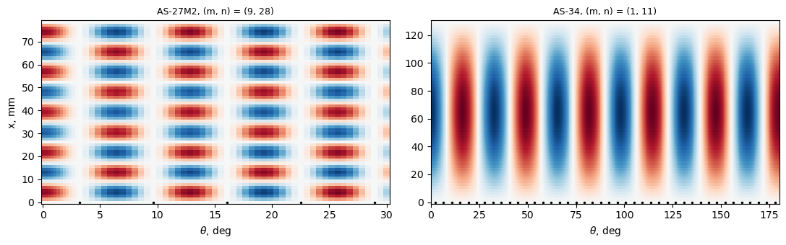
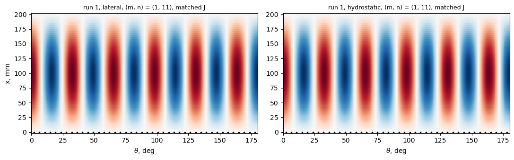
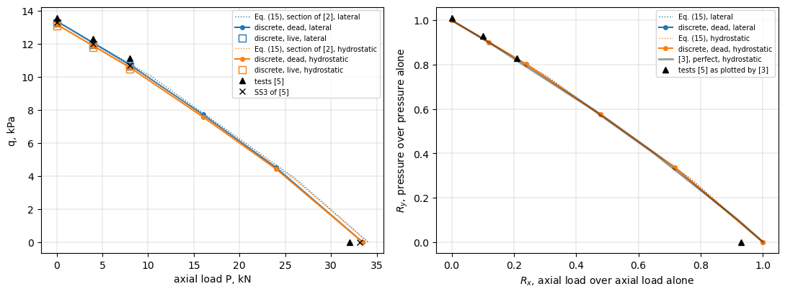
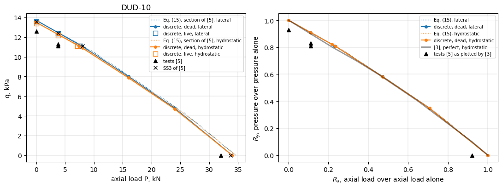
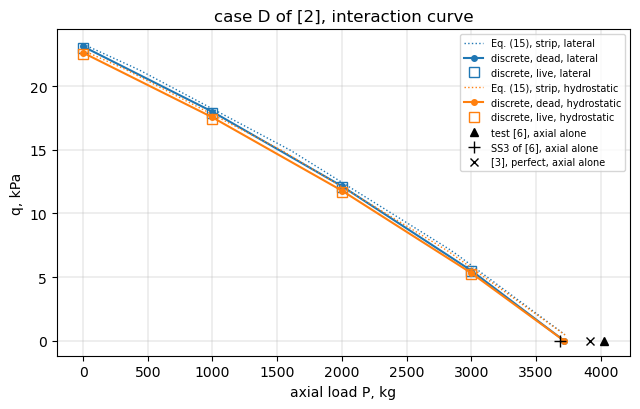

Discrete and smeared stringers: integrally stiffened Technion shells (Weller and Singer 1977; Poorveis and Kabir 2006)#
How far is a model with discrete stringers from the smeared-stiffener theory when the stringers are closely spaced? Weller and Singer [1] tested in axial compression integrally stringer-stiffened 7075-T6 shells with the stringers outside and give, for each shell, the non-dimensional stringer properties, the load of the linear smeared-stiffener theory for the simple supports SS3 (\(w = M_x = N_x = v = 0\)) and SS4 (\(w = M_x = u = v = 0\)) and the test load (Table 1, p. 723). Poorveis and
Kabir [2] analysed one of these shells (AS-27M2, their case A) and a shell of Shen, Zhou and Chen (case D, shell AB6 of [6], through [3]) with a geometrically nonlinear Ritz model, with discrete and with smeared stringers (Table 2, p. 119), and a third shell (case C, shell DUD-8 of [5]) under external pressure and combined loading; the twin shell DUD-10 of [5], buckled under combined loading in the reversed sequence, is added. The pressure is applied as a dead and as a live (follower) load, and
case C and case D are also studied under combined pressure and axial compression, with the interaction curves of Shen, Zhou and Chen [3] for DUD-8 and DUD-10. This notebook builds the shells as MultiDomain assemblies with discrete blade stringers and compares with these values, and with the smeared theory of Block, Card and Mikulas [4] (equation (15), SS3, membrane pre-buckling state) evaluated for the section of [1] (which reproduces the SS3 loads of [1]) and for the section of the discrete
model (the reference of the discreteness gap).
The AS-27 shells have a Koiter parameter \(\theta > 0.64\), chosen by Weller and Singer to study unstable postbuckling of the skin panels between the stringers (p. 722); for AS-27M2 Poorveis and Kabir found the discrete value 30 % below the smeared one and attributed it to panel instability (p. 119).
[1] T. Weller and J. Singer, Experimental studies on the buckling under axial compression of integrally stringer-stiffened circular cylindrical shells, J. Appl. Mech. 44(4), 721-730, 1977, doi:10.1115/1.3424163.
[2] D. Poorveis and M. Z. Kabir, Buckling of discretely stringer-stiffened composite cylindrical shells under combined axial compression and external pressure, Scientia Iranica 13(2), 113-123, 2006.
[3] H.-S. Shen, P. Zhou and T.-Y. Chen, Postbuckling analysis of stiffened cylindrical shells under combined external pressure and axial compression, Thin-Walled Struct. 15(1), 43-63, 1993, doi:10.1016/0263-8231(93)90012-Y.
[4] D. L. Block, M. F. Card and M. M. Mikulas, Jr., Buckling of eccentrically stiffened orthotropic cylinders, NASA TN D-2960, 1965, https://ntrs.nasa.gov/citations/19650021133.
[5] H. Abramovich, T. Weller and J. Singer, Effect of sequence of combined loading on buckling of stiffened shells, Exp. Mech. 28(1), 1-13, 1988, doi:10.1007/BF02328988.
[6] J. Singer and H. Abramovich, Vibration techniques for definition of practical boundary conditions in stiffened shells, AIAA J. 17(7), 762-769, 1979, doi:10.2514/3.61215.
[1]:
%matplotlib inline
import time
import numpy as np
import matplotlib.pyplot as plt
from IPython.display import Markdown, display
import blade_cylinder_utils as bu
import stringer_cylinder_utils as su
def pct(value, ref):
return 100*(value/ref - 1)
def table(header, rows):
out = ['| ' + ' | '.join(header) + ' |', '|' + '---|'*len(header)]
out += ['| ' + ' | '.join(str(c) for c in row) + ' |' for row in rows]
display(Markdown('\n'.join(out)))
def plot_mode(ax, md_, c, skin, R, title, ns, frac=1.):
x, th, w = bu.skin_w(md_, c, skin, R)
sel = th <= frac*th.max() + 1e-12
ax.pcolormesh(np.degrees(th[sel]), x, (w[sel]/np.abs(w).max()).T, cmap='RdBu_r',
shading='auto', vmin=-1, vmax=1)
pos = (np.arange(ns) + 0.5)*2*np.pi/ns
pos = pos[pos <= th[sel].max()]
ax.plot(np.degrees(pos), np.zeros_like(pos), 'k.', ms=3)
ax.set_title(title, fontsize=9)
ax.set_xlabel(r'$\theta$, deg')
Shells, geometry and material#
Table 1 of [1] (p. 723): skin thickness \(h\), \(R/h\), \(L/R\), \(-(e_1/h)\) (\(e_1\) negative outside, Fig. 1), \(A_1/(bh)\), \(I_{11}/(bh^3)\) (about the centroid of the stringer), \(\eta_{t1} = G_1 I_{t1}/(bD)\) with \(D = E h^3/(12(1 - \nu^2))\), Koiter’s parameter \(\theta = [12(1 - \nu^2)]^{1/4} (b/2\pi) (Rh)^{-1/2}\) (p. 722), the SS3 and SS4 smeared loads and the test load, in kg (kilogram-force). \(E = 0.75 \times 10^4\) kg/mm\(^2\) (p. 724), \(\nu = 0.30\) (p. 722). The spacing \(b\) follows from \(\theta\); \(2\pi R/b\) gives the number of stringers. Units here: mm and kg (force); \(\bar{N}\) in kg/mm (times 9.807 for N/mm). AS-26M1 to AS-26M3 are excluded, as by the authors (footnote b); the SS4 load of AS-35 is misprinted (460 kg; \(2850/0.610 = 4672\) kg from the printed ratio) and not used. [1] gives each stringer by its area \(A_1\), its moment of inertia \(I_{11}\) about its own centroidal axis and its eccentricity \(e_1\) (nomenclature and Fig. 1, p. 722). The stringers are rectangles \(t_s \times h_s\) standing on the outer surface of the skin: \(h_s = \sqrt{12 I_{11}/A_1}\), \(t_s = A_1/h_s\), and the centroid of the rectangle, \((h + h_s)/2\) from the middle surface of the skin, reproduces \(e_1\) within 0.2 % (table below); the torsion constant of the rectangle reproduces \(I_{t1}\) (see the bfsccylinder implementation of this case for the check). The blades of the model are these rectangles, from the skin surface to the tip.
[2]:
E, NU, KGF = 0.75e4, 0.30, 9.80665
TABLE1 = {
'AS-27M1': (0.195, 618, 0.648, 3.86, 0.760, 2.860, 23.50, 0.807, 4190, 3600),
'AS-27M2': (0.204, 591, 0.652, 3.67, 0.717, 2.400, 19.84, 0.789, 4210, 3300),
'AS-27M3': (0.202, 597, 0.650, 3.72, 0.729, 2.520, 20.83, 0.793, 4240, 3920),
'AS-34': (0.254, 472, 1.080, 2.97, 0.533, 1.080, 5.75, 0.470, 3430, 2800),
'AS-35': (0.250, 480, 1.080, 3.04, 0.549, 1.180, 6.11, 0.474, 3390, 2850),
}
# Poorveis and Kabir (2006), Table 1 (p. 119): L, R, h, n_s, A1/(b1 h), e1/h, I1/(b h^3), G1 J1/(b D)
# and Table 2: test, smeared, discrete (kg/mm)
POORVEIS_D = (130.00, 120.10, 0.254, 85, 0.590, 3.420, 1.680, 6.563)
POORVEIS_T2 = {'A': (4.356, 6.110, 4.250), 'D': (5.334, 5.370, 5.450)}
k4 = (12*(1 - NU**2))**0.25
G = E/(2*(1 + NU))
def shell(h, R, L, ns, A, I, e, J, P3=None, Pe=None):
d = dict(h=h, R=R, L=L, ns=ns, b=2*np.pi*R/ns, A=A, I=I, e=e, J=J, P3=P3, Pe=Pe)
d['hs'] = np.sqrt(12*I/A)
d['ts'] = A/d['hs']
# the plate strip of the model is the rectangle h_s on the skin surface
d['Hs'] = d['hs']
d['Jplate'] = d['Hs']*d['ts']**3/3
return d
def plate_section(d):
# area, eccentricity and moment of inertia about the middle surface of the skin
# of the plate strip t_s x H_s on the skin surface
A, z = d['ts']*d['Hs'], (d['h'] + d['Hs'])/2
return (A, z, d['ts']*d['Hs']**3/12 + A*z**2)
shells = {}
rows = []
for s, (h, Rh, LR, e, Ab, Ib, eta, theta, P3, Pe) in TABLE1.items():
R = Rh*h
ns = int(round(2*np.pi*R/(theta*2*np.pi*np.sqrt(R*h)/k4)))
b = 2*np.pi*R/ns
D = E*h**3/(12*(1 - NU**2))
shells[s] = shell(h, R, LR*R, ns, Ab*b*h, Ib*b*h**3, e*h, eta*b*D/G, P3, Pe)
L, R, h, ns, Ab, e, Ib, eta = POORVEIS_D
b = 2*np.pi*R/ns
shells['D'] = shell(h, R, L, ns, Ab*b*h, Ib*b*h**3, e*h, eta*b*E*h**3/(12*(1 - NU**2))/G)
for s, d in shells.items():
rows.append([s, '%.3f' % d['h'], '%.2f' % d['R'], '%.2f' % d['L'], d['ns'], '%.3f' % d['ts'],
'%.3f' % d['hs'], '%.4f (%.4f)' % ((d['h'] + d['hs'])/2, d['e']),
'%.3f' % d['J'], '%.2f' % (d['J']/d['Jplate'])])
table(['shell', 'h, mm', 'R, mm', 'L, mm', 'n_s', 't_s, mm', 'h_s, mm', '(h + h_s)/2 (e_1), mm',
'I_t1, mm^4', 'I_t1/J_plate'], rows)
shell |
h, mm |
R, mm |
L, mm |
n_s |
t_s, mm |
h_s, mm |
(h + h_s)/2 (e_1), mm |
I_t1, mm^4 |
I_t1/J_plate |
|---|---|---|---|---|---|---|---|---|---|
AS-27M1 |
0.195 |
120.51 |
78.09 |
56 |
1.529 |
1.310 |
0.7527 (0.7527) |
0.561 |
0.36 |
AS-27M2 |
0.204 |
120.56 |
78.61 |
56 |
1.530 |
1.293 |
0.7485 (0.7487) |
0.542 |
0.35 |
AS-27M3 |
0.202 |
120.59 |
78.39 |
56 |
1.532 |
1.301 |
0.7515 (0.7514) |
0.553 |
0.36 |
AS-34 |
0.254 |
119.89 |
129.48 |
84 |
0.969 |
1.252 |
0.7532 (0.7544) |
0.201 |
0.53 |
AS-35 |
0.250 |
120.00 |
129.60 |
84 |
0.970 |
1.270 |
0.7598 (0.7600) |
0.204 |
0.53 |
D |
0.254 |
120.10 |
130.00 |
85 |
0.896 |
1.485 |
0.8694 (0.8687) |
0.227 |
0.64 |
Smeared-stiffener theory#
Equation (15) of [4] (su.smeared_ss, minimum over \(m \le 12\), \(n \le 60\)) with the section of [1] reproduces the SS3 loads of [1]. The discrete model represents a stringer by the plate strip \(t_s \times h_s\) standing on the outer surface of the skin, the rectangle above; as a smeared section this strip has \(A = t_s h_s\), \(\bar{z} = (h + h_s)/2\) and \(I_o = t_s h_s^3/12 + A
\bar{z}^2\) about the middle surface of the skin, the section of [1] up to the rounding of \(e_1\) (equation (15) for the two agrees within 0.05 %), and the twisting stiffness of a Kirchhoff plate strip \(4 D_{66} h_s = G h_s t_s^3/3\) (“plate J”), 1.6 to 2.9 times \(G I_{t1}\) for these squat stringers (last column above). The main model scales \(D_{66}\) of the blades so that \(4 D_{66}
h_s = G I_{t1}\) (“matched J”); both are run.
[3]:
rows = []
for s, d in shells.items():
Wsec = (d['A'], d['e'], d['I'] + d['A']*d['e']**2)
Psec = plate_section(d)
d['sm_W'] = su.smeared_ss(d['R'], d['L'], d['h'], E, NU, d['b'], *Wsec, d['J'])
d['sm'] = {'matched': su.smeared_ss(d['R'], d['L'], d['h'], E, NU, d['b'], *Psec, d['J']),
'plate': su.smeared_ss(d['R'], d['L'], d['h'], E, NU, d['b'], *Psec, d['Jplate'])}
N3 = d['P3']/(2*np.pi*d['R']) if d['P3'] else None
rows.append([s, '-' if N3 is None else '%.3f' % N3,
'%.3f %s' % d['sm_W'] + ('' if N3 is None else ', %+.2f %%' % pct(d['sm_W'][0], N3)),
'%.3f %s' % d['sm']['matched'], '%.3f %s' % d['sm']['plate']])
table(['shell', 'SS3 of [1], kg/mm', 'Eq. (15), section of [1]', 'Eq. (15), strip, matched J',
'Eq. (15), strip, plate J'], rows)
shell |
SS3 of [1], kg/mm |
Eq. (15), section of [1] |
Eq. (15), strip, matched J |
Eq. (15), strip, plate J |
|---|---|---|---|---|
AS-27M1 |
5.534 |
5.540 (1, 13), +0.11 % |
5.540 (1, 13) |
7.771 (1, 11) |
AS-27M2 |
5.558 |
5.557 (1, 13), -0.01 % |
5.556 (1, 13) |
7.797 (1, 11) |
AS-27M3 |
5.596 |
5.589 (1, 13), -0.11 % |
5.590 (1, 13) |
7.831 (1, 11) |
AS-34 |
4.553 |
4.547 (1, 11), -0.14 % |
4.545 (1, 11) |
5.030 (1, 11) |
AS-35 |
4.496 |
4.491 (1, 11), -0.11 % |
4.491 (1, 11) |
4.984 (1, 11) |
D |
5.018 (1, 11) |
5.020 (1, 11) |
5.371 (1, 11) |
Model with discrete stringers#
su.buckling_membrane: the assembly of bu.build_cylinder, curved skin panels cylshell_clpt_sanders between the stringers and one plate_clpt_gl blade per stringer ('SSycte' and 'BFycte' connections); the half cylinder between two symmetry planes through the middle of a bay for an even number of stringers, the whole cylinder for case D (85 stringers). SS3 ends (\(v = w =
0\) on skin and blades, \(u\) free, one point with \(u = 0\)), membrane pre-buckling state of a uniform axial strain in skin and blades, as in the smeared theory; ten eigenvalues, the lowest positive one is critical, its \((m, n)\) from the normal displacement of the skin (bu.classify).
Convergence#
Terms \(m_x\) along \(x\) (skin and blades), \(n_y\) across a skin bay and \(n_b\) across a blade, matched \(J\).
[4]:
LEVELS = [(12, 6, 4), (16, 8, 4), (20, 10, 5)]
t0 = time.time()
rows = []
for s in ('AS-27M2', 'AS-34'):
d = shells[s]
prev = None
for lev in LEVELS:
N, modes, N1, md_, skin, ndof, dt = su.buckling_membrane(
d['R'], d['h'], d['L'], E, NU, d['ts'], d['Hs'], 'external', 'SS', d['ns'], *lev,
D66_factor=d['J']/d['Jplate'])
rows.append([s, lev, ndof, '%.1f' % dt, '%.4f' % N, '(%d, %d)' % modes[0][1:3],
'' if prev is None else '%+.2f %%' % pct(N, prev)])
prev = N
table(['shell', 'm_x, n_y, n_b', 'dofs', 'time, s', 'N, kg/mm', '(m, n)', 'change'], rows)
print('%.0f s' % (time.time() - t0))
shell |
m_x, n_y, n_b |
dofs |
time, s |
N, kg/mm |
(m, n) |
change |
|---|---|---|---|---|---|---|
AS-27M2 |
(12, 6, 4) |
7687 |
6.9 |
4.5657 |
(8, 28) |
|
AS-27M2 |
(16, 8, 4) |
12767 |
14.7 |
4.4320 |
(9, 28) |
-2.93 % |
AS-27M2 |
(20, 10, 5) |
20943 |
44.2 |
4.3904 |
(9, 28) |
-0.94 % |
AS-34 |
(12, 6, 4) |
11495 |
5.3 |
4.4782 |
(1, 11) |
|
AS-34 |
(16, 8, 4) |
19151 |
10.3 |
4.4743 |
(1, 11) |
-0.09 % |
AS-34 |
(20, 10, 5) |
31415 |
19.3 |
4.4707 |
(1, 11) |
-0.08 % |
101 s
Discrete against smeared stringers and the tests#
Finest level; “gap” is the discrete model against equation (15) for the same strip and twisting stiffness.
[5]:
t0 = time.time()
RES = {}
for s, d in shells.items():
for J in ('matched', 'plate'):
f = d['J']/d['Jplate'] if J == 'matched' else 1.
RES[(s, J)] = su.buckling_membrane(d['R'], d['h'], d['L'], E, NU, d['ts'], d['Hs'],
'external', 'SS', d['ns'], *LEVELS[-1], D66_factor=f)
print('%.0f s' % (time.time() - t0))
rows = []
for s, d in shells.items():
for J in ('matched', 'plate'):
N, modes = RES[(s, J)][:2]
sm = d['sm'][J]
row = [s, J, '%.3f (%d, %d)' % (N, *modes[0][1:3]), '%.3f' % sm[0], '**%+.1f %%**' % pct(N, sm[0])]
if d['P3']:
N3, Ne = d['P3']/(2*np.pi*d['R']), d['Pe']/(2*np.pi*d['R'])
row += ['%.3f' % N3, '%+.1f %%' % pct(N, N3), '%.3f' % Ne, '%+.1f %%' % pct(N, Ne)]
else:
row += ['-', '-', '-', '-']
rows.append(row)
table(['shell', 'J', 'discrete N (m, n)', 'Eq. (15), same strip', 'gap', 'SS3 of [1]', 'vs SS3',
'test [1]', 'vs test'], rows)
rows = []
for case, s in (('A', 'AS-27M2'), ('D', 'D')):
test, sm2, di2 = POORVEIS_T2[case]
N = RES[(s, 'matched')][0]
rows.append([case, test, sm2, di2, '%+.1f %%' % pct(di2, sm2), '%.3f' % N, '%+.1f %%' % pct(N, test),
'%+.1f %%' % pct(N, di2), '%+.1f %%' % pct(N, sm2), '%.3f' % RES[(s, 'plate')][0]])
table(['case [2]', 'test', 'smeared [2]', 'discrete [2]', 'discrete vs smeared [2]',
'discrete, matched J', 'vs test', 'vs discrete [2]', 'vs smeared [2]', 'discrete, plate J'], rows)
384 s
shell |
J |
discrete N (m, n) |
Eq. (15), same strip |
gap |
SS3 of [1] |
vs SS3 |
test [1] |
vs test |
|---|---|---|---|---|---|---|---|---|
AS-27M1 |
matched |
4.001 (9, 28) |
5.540 |
-27.8 % |
5.534 |
-27.7 % |
4.754 |
-15.8 % |
AS-27M1 |
plate |
4.037 (9, 28) |
7.771 |
-48.1 % |
5.534 |
-27.0 % |
4.754 |
-15.1 % |
AS-27M2 |
matched |
4.390 (9, 28) |
5.556 |
-21.0 % |
5.558 |
-21.0 % |
4.356 |
+0.8 % |
AS-27M2 |
plate |
4.436 (9, 28) |
7.797 |
-43.1 % |
5.558 |
-20.2 % |
4.356 |
+1.8 % |
AS-27M3 |
matched |
4.307 (9, 28) |
5.590 |
-23.0 % |
5.596 |
-23.0 % |
5.173 |
-16.8 % |
AS-27M3 |
plate |
4.349 (9, 28) |
7.831 |
-44.5 % |
5.596 |
-22.3 % |
5.173 |
-15.9 % |
AS-34 |
matched |
4.471 (1, 11) |
4.545 |
-1.6 % |
4.553 |
-1.8 % |
3.717 |
+20.3 % |
AS-34 |
plate |
4.888 (1, 11) |
5.030 |
-2.8 % |
4.553 |
+7.3 % |
3.717 |
+31.5 % |
AS-35 |
matched |
4.416 (1, 11) |
4.491 |
-1.7 % |
4.496 |
-1.8 % |
3.780 |
+16.8 % |
AS-35 |
plate |
4.838 (1, 11) |
4.984 |
-2.9 % |
4.496 |
+7.6 % |
3.780 |
+28.0 % |
D |
matched |
4.928 (1, 11) |
5.020 |
-1.8 % |
||||
D |
plate |
5.225 (1, 11) |
5.371 |
-2.7 % |
case [2] |
test |
smeared [2] |
discrete [2] |
discrete vs smeared [2] |
discrete, matched J |
vs test |
vs discrete [2] |
vs smeared [2] |
discrete, plate J |
|---|---|---|---|---|---|---|---|---|---|
A |
4.356 |
6.11 |
4.25 |
-30.4 % |
4.390 |
+0.8 % |
+3.3 % |
-28.1 % |
4.436 |
D |
5.334 |
5.37 |
5.45 |
+1.5 % |
4.928 |
-7.6 % |
-9.6 % |
-8.2 % |
5.225 |
Buckling modes (matched \(J\)): normal displacement of the skin, unrolled; AS-27M2 over one sixth of the half cylinder modelled, AS-34 over the half cylinder; the dots mark the stringers.
[6]:
fig, axes = plt.subplots(1, 2, figsize=(11, 3.5))
for ax, s, frac in ((axes[0], 'AS-27M2', 1/6), (axes[1], 'AS-34', 1.)):
N, modes, N1, md_, skin = RES[(s, 'matched')][:5]
plot_mode(ax, md_, modes[0][3], skin, shells[s]['R'],
'%s, (m, n) = (%d, %d)' % (s, *modes[0][1:3]), shells[s]['ns'], frac)
axes[0].set_ylabel('x, mm')
plt.tight_layout()
plt.show()

Case C of Poorveis and Kabir: external pressure (shell DUD-8 of [5])#
Case C of [2] (Table 1, p. 119: 84 outside stringers, \(L = 200\) mm, \(R = 120.27\) mm, \(h = 0.249\) mm, \(A_1/(b_1 h) = 0.666\), \(e_1/h = 4.030\), \(I_1/(b h^3) = 2.770\), \(G_1 J_1/(bD) = 7.505\)) is the shell DUD-8 of Abramovich, Weller and Singer [5] (Table 1, p. 2: \(h = 0.249\) mm, \(L = 200\) mm, \(R/h = 483\), \(b_1/h = 36.15\), \(A_1/(b_1 h) = 0.666\), \(I_1/(b_1 h^3) = 2.77\), \(e_1/h = -4.03\), 84 integral external stringers, 7075-T6, \(E = 7.5 \times 10^4\) MPa, \(\nu = 0.3\); the footnote also prints \(R = 120.12\) mm and \(b_1 = 8.985\) mm, whereas \(R/h\) and \(b_1/h\) give 120.27 mm and 9.00 mm, the values of [2] used here; \(G_1 J_1/(bD)\) is from [2]). [2] defines \(I_1\) about the centroidal axis of the stringer and \(e_1\) as its eccentricity, positive outside (p. 118), [5] \(e_1\) as the distance from the middle surface of the skin to the centroid of the stringer and \(I_{11}\) about its centroidal axis (list of symbols, p. 1). The blade is, as for the shells of [1], the rectangle \(h_s = \sqrt{12 I_1/A_1}\), \(t_s = A_1/h_s\) on the skin surface; its centroid \((h + h_s)/2\) reproduces \(e_1\) within 0.1 % (printed below). Nominal simple supports, found between SS-3 and SS-4 by the vibration correlation technique (p. 3, p. 8). Table 4 of [5] (p. 9), DUD-8, with the predictions of [5]:
run |
load |
test \((n/m)\) |
SS3 \((n/m)\) |
SS4 \((n/m)\) |
equivalent springs \((n/m)\) |
|---|---|---|---|---|---|
1 |
external pressure, kPa |
13.55 (10/1) |
13.3 (11/1) |
16.7 (13/1) |
14.6 (11/1) |
2 |
pressure, kPa, at \(P = 4\) kN |
12.3 (9/1) |
12.0 (11/1) |
15.8 (13/1) |
14.2 (12/1) |
3 |
pressure, kPa, at \(P = 8\) kN |
11.10 (9/1) |
10.7 (11/1) |
14.8 (12/1) |
13.3 (12/1) |
4 |
axial compression, kN |
32 (7/1) |
33.14 (9/1) |
54.05 (10/1) |
41.80 (10/1) |
Table 2 of [2] (p. 119) lists runs 1 and 3 as C1 and C2: test 0.001355 and 0.001110 kg/mm\(^2\) (the latter at \(P = 1.0587\) kg/mm), smeared (nonlinear) 0.001316 (10, 11) and 0.001095 (10, 11), discrete (nonlinear) 0.001480 (10, 11, 10) and 0.001270 (10, 10, 10), with \((M, n)\) or \((M, n, N)\), \(M\) and \(N\) the numbers of Ritz terms of [2].
Units. [2] converts with 1 kg = 10 N: 13.55 kPa = 0.001355 kg/mm\(^2\), \(P = 8000/(2\pi \times 120.27)/10 = 1.0587\) kg/mm, \(E = 7500\) kg/mm\(^2\) = 75 GPa of [5]. The model uses these units (mm, \(E = 7500\)); \(10^4 q\) is the pressure in kPa, printed in the tables.
Lateral or hydrostatic pressure. [2] writes the external work of a radial dead pressure \(q_D\), adds that “for hydrostatic pressure, \(P\) is related to \(q_D\) (\(P = R q_D/2\))” and gives the load stiffness of a live pressure (p. 117), without saying which applies to case C. [5] says only “external pressure”; its Fig. 1 (p. 3) draws the pressure on the shell wall and on the bottom end plate inside the pressure vessel (closed ends, the end load of hydrostatic pressure); whether the load-cell value \(P\) includes this end load is not said. Both are computed, first as dead loads (a live variant follows the results): lateral (\(\bar{N}_y = q R\), \(\bar{N}_x = 0\)) and hydrostatic (\(\bar{N}_x = q R/2\) in addition); \(P\) of runs 2 and 3 is added to \(\bar{N}_x\).
Smeared theory. Equation (15) of [4] (p. 12) holds for any combination of \(\bar{N}_x\) and \(\bar{N}_y\) (positive in compression, p. 8), “under hydrostatic or lateral pressure” included: \((m\pi/L)^2 \bar{N}_x +
(n/R)^2 \bar{N}_y\) equals the right-hand side of su.smeared_ss; with \(\bar{N}_y = q R\) and \(\bar{N}_x = P/(2\pi R) + \kappa q R/2\) (\(\kappa = 0\) lateral, 1 hydrostatic) it gives \(q\) (su.smeared_ss_pressure).
Discrete model (su.buckling_pressure): the assembly and SS3 ends of the axial cases; the membrane pre-buckling state of equation (15): Nyy \(= -q
R\) in the skin panels, no hoop force in the blades, and for the hydrostatic end load the uniform axial strain of skin and blades of su.buckling_membrane. The fixed load \(P\) enters through the attributes Nxx_cte of the panels, added to the constitutive stiffness, so that the eigenvalue is the pressure. The membrane state is chosen, rather than a linear static state from a pressure load, because it is the state of equation (15): the comparison with the smeared theory is like for
like, as in the axial cases; a static state would add the bending of the skin at the SS3 ends (\(w = 0\) holds back the radial contraction), which [2] includes with the nonlinear pre-buckling deformation.
[7]:
# Poorveis and Kabir (2006), Table 1 (p. 119) = DUD-8, Table 1 of [5] (p. 2)
POORVEIS_C = (200.00, 120.27, 0.249, 84, 0.666, 4.030, 2.770, 7.505)
KPA = 1e4 # kPa per unit pressure of the model (1 kg = 10 N, mm)
# Table 4 of [5], p. 9 (kPa): P (kN), test, SS3, SS4, equivalent springs
DUD8 = {1: (0., 13.55, 13.3, 16.7, 14.6), 2: (4., 12.3, 12.0, 15.8, 14.2),
3: (8., 11.10, 10.7, 14.8, 13.3)}
DUD8_AXIAL = (32., 33.14, 54.05, 41.80) # kN, run 4
# Table 2 of [2], p. 119 (units of the model): test, smeared (nonlinear), discrete (nonlinear)
POORVEIS_CT2 = {1: (0.001355, 0.001316, 0.001480), 3: (0.001110, 0.001095, 0.001270)}
L, R, h, ns, Ab, e, Ib, eta = POORVEIS_C
b = 2*np.pi*R/ns
dc = shell(h, R, L, ns, Ab*b*h, Ib*b*h**3, e*h, eta*b*E*h**3/(12*(1 - NU**2))/G)
shells['C'] = dc
kN = 2*np.pi*R*10/1e3 # kN per unit axial force per unit circumference
LOADS = [(run, load, hyd, DUD8[run][0]/kN) for run in DUD8
for load, hyd in (('lateral', False), ('hydrostatic', True))]
print('case C: b = %.3f mm, t_s = %.3f mm, h_s = %.3f mm, (h + h_s)/2 = %.4f mm (e_1 = %.4f mm), '
'I_t1 = %.4f mm^4, I_t1/J_plate = %.3f; P = 8 kN: %.4f kg/mm'
% (b, dc['ts'], dc['hs'], (h + dc['hs'])/2, dc['e'], dc['J'], dc['J']/dc['Jplate'], 8/kN))
Wsec = (dc['A'], dc['e'], dc['I'] + dc['A']*dc['e']**2)
Psec = plate_section(dc)
args = (dc['R'], dc['L'], dc['h'], E, NU, dc['b'])
smC = {}
rows = []
for run, load, hyd, P in LOADS:
s = {'W': su.smeared_ss_pressure(*args, *Wsec, dc['J'], hyd, P),
'matched': su.smeared_ss_pressure(*args, *Psec, dc['J'], hyd, P),
'plate': su.smeared_ss_pressure(*args, *Psec, dc['Jplate'], hyd, P)}
smC[(run, load)] = s
P_kN, test, ss3 = DUD8[run][:3]
qW = KPA*s['W'][0]
rows.append([run, P_kN, load, '%.2f %s' % (qW, s['W'][1]),
'%.2f %s' % (KPA*s['matched'][0], s['matched'][1]), '%.2f' % (KPA*s['plate'][0]),
ss3, '%+.1f %%' % pct(qW, ss3), test, '%+.1f %%' % pct(qW, test)])
table(['run', 'P, kN', 'pressure', 'Eq. (15), section of [2], kPa (m, n)', 'Eq. (15), strip, matched J',
'Eq. (15), strip, plate J', 'SS3 of [5]', 'section of [2] vs SS3 of [5]', 'test [5]',
'section of [2] vs test'], rows)
sma = {'W': su.smeared_ss(*args, *Wsec, dc['J']), 'matched': su.smeared_ss(*args, *Psec, dc['J']),
'plate': su.smeared_ss(*args, *Psec, dc['Jplate'])}
print('run 4, axial compression, Eq. (15): section of [2] %.2f kN %s (SS3 of [5] %.2f kN, %+.1f %%; test %.0f kN), '
'strip matched J %.2f kN, plate J %.2f kN'
% (kN*sma['W'][0], sma['W'][1], DUD8_AXIAL[1], pct(kN*sma['W'][0], DUD8_AXIAL[1]), DUD8_AXIAL[0],
kN*sma['matched'][0], kN*sma['plate'][0]))
case C: b = 8.996 mm, t_s = 0.848 mm, h_s = 1.759 mm, (h + h_s)/2 = 1.0041 mm (e_1 = 1.0035 mm), I_t1 = 0.2482 mm^4, I_t1/J_plate = 0.694; P = 8 kN: 1.0587 kg/mm
run |
P, kN |
pressure |
Eq. (15), section of [2], kPa (m, n) |
Eq. (15), strip, matched J |
Eq. (15), strip, plate J |
SS3 of [5] |
section of [2] vs SS3 of [5] |
test [5] |
section of [2] vs test |
|---|---|---|---|---|---|---|---|---|---|
1 |
0.0 |
lateral |
13.38 (1, 11) |
13.38 (1, 11) |
14.10 |
13.3 |
+0.6 % |
13.55 |
-1.3 % |
1 |
0.0 |
hydrostatic |
13.18 (1, 11) |
13.19 (1, 11) |
13.90 |
13.3 |
-0.9 % |
13.55 |
-2.7 % |
2 |
4.0 |
lateral |
12.08 (1, 11) |
12.08 (1, 11) |
12.80 |
12.0 |
+0.7 % |
12.3 |
-1.8 % |
2 |
4.0 |
hydrostatic |
11.90 (1, 11) |
11.91 (1, 11) |
12.62 |
12.0 |
-0.8 % |
12.3 |
-3.2 % |
3 |
8.0 |
lateral |
10.78 (1, 11) |
10.78 (1, 11) |
11.50 |
10.7 |
+0.8 % |
11.1 |
-2.9 % |
3 |
8.0 |
hydrostatic |
10.62 (1, 11) |
10.63 (1, 11) |
11.34 |
10.7 |
-0.7 % |
11.1 |
-4.3 % |
run 4, axial compression, Eq. (15): section of [2] 34.04 kN (1, 9) (SS3 of [5] 33.14 kN, +2.7 %; test 32 kN), strip matched J 34.05 kN, plate J 35.53 kN
Convergence (matched \(J\), the six pressure loadings).
[8]:
LEVELS_C = [(12, 6, 4), (16, 8, 4), (20, 10, 5), (24, 10, 5)]
t0 = time.time()
RESC = {}
rows = []
for run, load, hyd, P in LOADS:
prev = None
for lev in LEVELS_C:
RESC[(lev, 'matched', run, load)] = su.buckling_pressure(
dc['R'], dc['h'], dc['L'], E, NU, dc['ts'], dc['Hs'], 'external', dc['ns'], *lev,
D66_factor=dc['J']/dc['Jplate'], hydrostatic=hyd, Nx0=P)
q, modes, md_, skin, ndof, dt = RESC[(lev, 'matched', run, load)]
rows.append([run, load, lev, ndof, '%.1f' % dt, '%.3f' % (KPA*q), '(%d, %d)' % modes[0][1:3],
'' if prev is None else '%+.2f %%' % pct(q, prev)])
prev = q
table(['run', 'pressure', 'm_x, n_y, n_b', 'dofs', 'time, s', 'q_cr, kPa', '(m, n)', 'change'], rows)
print('%.0f s' % (time.time() - t0))
run |
pressure |
m_x, n_y, n_b |
dofs |
time, s |
q_cr, kPa |
(m, n) |
change |
|---|---|---|---|---|---|---|---|
1 |
lateral |
(12, 6, 4) |
11495 |
4.7 |
13.397 |
(1, 11) |
|
1 |
lateral |
(16, 8, 4) |
19151 |
9.3 |
13.385 |
(1, 11) |
-0.09 % |
1 |
lateral |
(20, 10, 5) |
31415 |
17.9 |
13.374 |
(1, 11) |
-0.08 % |
1 |
lateral |
(24, 10, 5) |
37631 |
28.0 |
13.366 |
(1, 11) |
-0.06 % |
1 |
hydrostatic |
(12, 6, 4) |
11495 |
4.7 |
13.199 |
(1, 11) |
|
1 |
hydrostatic |
(16, 8, 4) |
19151 |
9.4 |
13.187 |
(1, 11) |
-0.09 % |
1 |
hydrostatic |
(20, 10, 5) |
31415 |
18.1 |
13.176 |
(1, 11) |
-0.08 % |
1 |
hydrostatic |
(24, 10, 5) |
37631 |
28.3 |
13.168 |
(1, 11) |
-0.06 % |
2 |
lateral |
(12, 6, 4) |
11495 |
4.5 |
12.076 |
(1, 11) |
|
2 |
lateral |
(16, 8, 4) |
19151 |
9.2 |
12.063 |
(1, 11) |
-0.10 % |
2 |
lateral |
(20, 10, 5) |
31415 |
17.9 |
12.052 |
(1, 11) |
-0.09 % |
2 |
lateral |
(24, 10, 5) |
37631 |
27.6 |
12.044 |
(1, 11) |
-0.07 % |
2 |
hydrostatic |
(12, 6, 4) |
11495 |
4.9 |
11.897 |
(1, 11) |
|
2 |
hydrostatic |
(16, 8, 4) |
19151 |
9.4 |
11.885 |
(1, 11) |
-0.10 % |
2 |
hydrostatic |
(20, 10, 5) |
31415 |
18.3 |
11.874 |
(1, 11) |
-0.09 % |
2 |
hydrostatic |
(24, 10, 5) |
37631 |
27.5 |
11.866 |
(1, 11) |
-0.07 % |
3 |
lateral |
(12, 6, 4) |
11495 |
4.6 |
10.754 |
(1, 11) |
|
3 |
lateral |
(16, 8, 4) |
19151 |
9.1 |
10.742 |
(1, 11) |
-0.11 % |
3 |
lateral |
(20, 10, 5) |
31415 |
18.2 |
10.731 |
(1, 11) |
-0.10 % |
3 |
lateral |
(24, 10, 5) |
37631 |
26.4 |
10.723 |
(1, 11) |
-0.07 % |
3 |
hydrostatic |
(12, 6, 4) |
11495 |
4.7 |
10.595 |
(1, 11) |
|
3 |
hydrostatic |
(16, 8, 4) |
19151 |
9.0 |
10.583 |
(1, 11) |
-0.11 % |
3 |
hydrostatic |
(20, 10, 5) |
31415 |
17.7 |
10.572 |
(1, 11) |
-0.10 % |
3 |
hydrostatic |
(24, 10, 5) |
37631 |
26.0 |
10.564 |
(1, 11) |
-0.07 % |
356 s
Results (finest level; plate \(J\) as well; run 4 with su.buckling_membrane). “Gap”: discrete model against equation (15) for the same strip and twisting stiffness. Pressures in kPa.
[9]:
lev = LEVELS_C[-1]
t0 = time.time()
for run, load, hyd, P in LOADS:
RESC[(lev, 'plate', run, load)] = su.buckling_pressure(
dc['R'], dc['h'], dc['L'], E, NU, dc['ts'], dc['Hs'], 'external', dc['ns'], *lev,
hydrostatic=hyd, Nx0=P)
axC = {J: su.buckling_membrane(dc['R'], dc['h'], dc['L'], E, NU, dc['ts'], dc['Hs'], 'external', 'SS',
dc['ns'], *lev, D66_factor=dc['J']/dc['Jplate'] if J == 'matched' else 1.)
for J in ('matched', 'plate')}
print('%.0f s' % (time.time() - t0))
rows = []
for run, load, hyd, P in LOADS:
P_kN, test, ss3, ss4, sp = DUD8[run]
for J in ('matched', 'plate'):
q, modes = RESC[(lev, J, run, load)][:2]
sm = smC[(run, load)][J]
row = [run, P_kN, load, J, '%.2f (%d, %d)' % (KPA*q, *modes[0][1:3]), '%.2f' % (KPA*sm[0]),
'**%+.1f %%**' % pct(q, sm[0]), test, '%+.1f %%' % pct(KPA*q, test),
ss3, '%+.1f %%' % pct(KPA*q, ss3)]
if run in POORVEIS_CT2:
t2, sm2, di2 = POORVEIS_CT2[run]
row += ['%.2f' % (KPA*sm2), '%+.1f %%' % pct(q, sm2), '%.2f' % (KPA*di2), '%+.1f %%' % pct(q, di2)]
else:
row += ['-', '-', '-', '-']
rows.append(row)
table(['run', 'P, kN', 'pressure', 'J', 'discrete q (m, n)', 'Eq. (15), same strip', 'gap', 'test [5]',
'vs test', 'SS3 of [5]', 'vs SS3 of [5]', 'smeared [2]', 'vs smeared [2]', 'discrete [2]',
'vs discrete [2]'], rows)
rows = []
for J in ('matched', 'plate'):
N, modes = axC[J][:2]
rows.append([J, '%.2f (%d, %d)' % (kN*N, *modes[0][1:3]), '%.2f' % (kN*sma[J][0]),
'**%+.1f %%**' % pct(N, sma[J][0]), DUD8_AXIAL[0], '%+.1f %%' % pct(kN*N, DUD8_AXIAL[0]),
DUD8_AXIAL[1], '%+.1f %%' % pct(kN*N, DUD8_AXIAL[1])])
table(['run 4, J', 'discrete P, kN (m, n)', 'Eq. (15), same strip', 'gap', 'test [5]', 'vs test',
'SS3 of [5]', 'vs SS3 of [5]'], rows)
fig, axes = plt.subplots(1, 2, figsize=(11, 3.5))
for ax, load in zip(axes, ('lateral', 'hydrostatic')):
q, modes, md_, skin = RESC[(lev, 'matched', 1, load)][:4]
plot_mode(ax, md_, modes[0][3], skin, dc['R'],
'run 1, %s, (m, n) = (%d, %d), matched J' % (load, *modes[0][1:3]), dc['ns'])
axes[0].set_ylabel('x, mm')
plt.tight_layout()
plt.show()
211 s
run |
P, kN |
pressure |
J |
discrete q (m, n) |
Eq. (15), same strip |
gap |
test [5] |
vs test |
SS3 of [5] |
vs SS3 of [5] |
smeared [2] |
vs smeared [2] |
discrete [2] |
vs discrete [2] |
|---|---|---|---|---|---|---|---|---|---|---|---|---|---|---|
1 |
0.0 |
lateral |
matched |
13.37 (1, 11) |
13.38 |
-0.1 % |
13.55 |
-1.4 % |
13.3 |
+0.5 % |
13.16 |
+1.6 % |
14.80 |
-9.7 % |
1 |
0.0 |
lateral |
plate |
14.02 (1, 11) |
14.10 |
-0.6 % |
13.55 |
+3.5 % |
13.3 |
+5.4 % |
13.16 |
+6.5 % |
14.80 |
-5.3 % |
1 |
0.0 |
hydrostatic |
matched |
13.17 (1, 11) |
13.19 |
-0.1 % |
13.55 |
-2.8 % |
13.3 |
-1.0 % |
13.16 |
+0.1 % |
14.80 |
-11.0 % |
1 |
0.0 |
hydrostatic |
plate |
13.81 (1, 11) |
13.90 |
-0.6 % |
13.55 |
+1.9 % |
13.3 |
+3.9 % |
13.16 |
+5.0 % |
14.80 |
-6.7 % |
2 |
4.0 |
lateral |
matched |
12.04 (1, 11) |
12.08 |
-0.3 % |
12.3 |
-2.1 % |
12.0 |
+0.4 % |
||||
2 |
4.0 |
lateral |
plate |
12.70 (1, 11) |
12.80 |
-0.8 % |
12.3 |
+3.2 % |
12.0 |
+5.8 % |
||||
2 |
4.0 |
hydrostatic |
matched |
11.87 (1, 11) |
11.91 |
-0.3 % |
12.3 |
-3.5 % |
12.0 |
-1.1 % |
||||
2 |
4.0 |
hydrostatic |
plate |
12.51 (1, 11) |
12.62 |
-0.8 % |
12.3 |
+1.7 % |
12.0 |
+4.3 % |
||||
3 |
8.0 |
lateral |
matched |
10.72 (1, 11) |
10.78 |
-0.6 % |
11.1 |
-3.4 % |
10.7 |
+0.2 % |
10.95 |
-2.1 % |
12.70 |
-15.6 % |
3 |
8.0 |
lateral |
plate |
11.38 (1, 11) |
11.50 |
-1.1 % |
11.1 |
+2.5 % |
10.7 |
+6.3 % |
10.95 |
+3.9 % |
12.70 |
-10.4 % |
3 |
8.0 |
hydrostatic |
matched |
10.56 (1, 11) |
10.63 |
-0.6 % |
11.1 |
-4.8 % |
10.7 |
-1.3 % |
10.95 |
-3.5 % |
12.70 |
-16.8 % |
3 |
8.0 |
hydrostatic |
plate |
11.21 (1, 11) |
11.34 |
-1.1 % |
11.1 |
+1.0 % |
10.7 |
+4.8 % |
10.95 |
+2.4 % |
12.70 |
-11.7 % |
run 4, J |
discrete P, kN (m, n) |
Eq. (15), same strip |
gap |
test [5] |
vs test |
SS3 of [5] |
vs SS3 of [5] |
|---|---|---|---|---|---|---|---|
matched |
33.45 (1, 9) |
34.05 |
-1.8 % |
32.0 |
+4.5 % |
33.14 |
+0.9 % |
plate |
34.76 (1, 9) |
35.53 |
-2.2 % |
32.0 |
+8.6 % |
33.14 |
+4.9 % |

Live (follower) pressure. The pressure of the tests is the pressure of a fluid, which stays normal to the deformed skin and acts on its deformed area; [2] gives the load stiffness of this live pressure (p. 117) besides the external work of the dead one. The live variant adds to the geometric stiffness of the unit pressure the load stiffness of a unit follower pressure on every skin panel, Shell.calc_kCfollower (first-order area vector, the pressure on the middle surface of the skin, as
the hoop force \(q R\)), assembled at the offsets of the panels and reduced with the constraints of the assembly (su.follower_stiffness). The end load of the hydrostatic pressure acts on the rigid end plates and stays a dead axial load. The load stiffness is unsymmetric in general, symmetric when every edge of the loaded surface has \(w = 0\) or a zero normal displacement (Hibbitt 1979; Schweizerhof and Ramm 1984, Table 2): here the ends have \(w = 0\), the symmetry planes
\(v
= 0\) and the skin panels are connected to each other, so its skew part is a check (printed below). The eigenvalue problem is solved as an unsymmetric one, structsolve.lb(K, KG + KF, symmetric=False): the shift search of scipy.sparse.linalg.eigs along the positive real axis for the lowest positive real load multiplier, with a parity check of the number of real multipliers below it. Finest level, matched \(J\); run 1 also at the level before (convergence).
[10]:
t0 = time.time()
for run, load, hyd, P in LOADS:
for lv in (LEVELS_C[-2:] if run == 1 else LEVELS_C[-1:]):
RESC[(lv, 'live', run, load)] = su.buckling_pressure(
dc['R'], dc['h'], dc['L'], E, NU, dc['ts'], dc['Hs'], 'external', dc['ns'], *lv,
D66_factor=dc['J']/dc['Jplate'], hydrostatic=hyd, Nx0=P, follower=True)
print('%.0f s' % (time.time() - t0))
md_, skin = RESC[(lev, 'live', 1, 'lateral')][2:4]
KF = su.follower_stiffness(md_, skin)
print('skew part of the reduced load stiffness, ||KF - KF^T||/||KF|| = %.1e'
% (np.sqrt(((KF - KF.T).data**2).sum())/np.sqrt((KF.data**2).sum())))
rows = []
for run, load, hyd, P in LOADS:
P_kN, test, ss3 = DUD8[run][:3]
qd = RESC[(lev, 'matched', run, load)][0]
ql, modes = RESC[(lev, 'live', run, load)][:2]
row = [run, P_kN, load, '%.2f' % (KPA*qd), '%.2f (%d, %d)' % (KPA*ql, *modes[0][1:3]),
'**%+.2f %%**' % pct(ql, qd), test, '%+.1f %%' % pct(KPA*ql, test), ss3,
'%+.1f %%' % pct(KPA*ql, ss3)]
if run in POORVEIS_CT2:
row += ['%.2f' % (KPA*POORVEIS_CT2[run][2]), '%+.1f %%' % pct(ql, POORVEIS_CT2[run][2])]
else:
row += ['-', '-']
rows.append(row)
table(['run', 'P, kN', 'pressure', 'dead q', 'live q (m, n)', 'live vs dead', 'test [5]', 'live vs test',
'SS3 of [5]', 'live vs SS3 of [5]', 'discrete [2]', 'live vs discrete [2]'], rows)
rows = []
for load in ('lateral', 'hydrostatic'):
q1, q2 = (RESC[(lv, 'live', 1, load)][0] for lv in LEVELS_C[-2:])
rows.append([load, LEVELS_C[-2], '%.3f' % (KPA*q1), LEVELS_C[-1], '%.3f' % (KPA*q2), '%+.2f %%' % pct(q2, q1)])
table(['run 1, live', 'level', 'q, kPa', 'level', 'q, kPa', 'change'], rows)
644 s
skew part of the reduced load stiffness, ||KF - KF^T||/||KF|| = 8.0e-11
run |
P, kN |
pressure |
dead q |
live q (m, n) |
live vs dead |
test [5] |
live vs test |
SS3 of [5] |
live vs SS3 of [5] |
discrete [2] |
live vs discrete [2] |
|---|---|---|---|---|---|---|---|---|---|---|---|
1 |
0.0 |
lateral |
13.37 |
13.26 (1, 11) |
-0.79 % |
13.55 |
-2.1 % |
13.3 |
-0.3 % |
14.80 |
-10.4 % |
1 |
0.0 |
hydrostatic |
13.17 |
13.07 (1, 11) |
-0.78 % |
13.55 |
-3.6 % |
13.3 |
-1.8 % |
14.80 |
-11.7 % |
2 |
4.0 |
lateral |
12.04 |
11.95 (1, 11) |
-0.79 % |
12.3 |
-2.9 % |
12.0 |
-0.4 % |
||
2 |
4.0 |
hydrostatic |
11.87 |
11.77 (1, 11) |
-0.78 % |
12.3 |
-4.3 % |
12.0 |
-1.9 % |
||
3 |
8.0 |
lateral |
10.72 |
10.64 (1, 11) |
-0.79 % |
11.1 |
-4.2 % |
10.7 |
-0.6 % |
12.70 |
-16.2 % |
3 |
8.0 |
hydrostatic |
10.56 |
10.48 (1, 11) |
-0.78 % |
11.1 |
-5.6 % |
10.7 |
-2.0 % |
12.70 |
-17.5 % |
run 1, live |
level |
q, kPa |
level |
q, kPa |
change |
|---|---|---|---|---|---|
lateral |
(20, 10, 5) |
13.268 |
(24, 10, 5) |
13.260 |
-0.06 % |
hydrostatic |
(20, 10, 5) |
13.073 |
(24, 10, 5) |
13.065 |
-0.06 % |
Interaction curve of DUD-8. Shen, Zhou and Chen [3] (Fig. 3(a), p. 57) give the interaction curve of DUD-8 under combined hydrostatic pressure and axial load from their boundary-layer postbuckling theory (simply supported ends, perfect shell and an imperfection \(W^*/t = 0.04\)), with the tests of [5], as \(R_x = \lambda_p/\lambda_p^*\) against \(R_y = \lambda_q/\lambda_q^*\), the loads divided by their theoretical values under axial compression alone and external pressure alone (notation, p. 44), which [3] does not print. Digitized here (reading precision \(\pm 0.01\)): perfect shell \(R_x = 1.00, 0.92, 0.83, 0.74, 0.65, 0.55, 0.45, 0.34, 0.23, 0.12, 0\) at \(R_y = 0, 0.1, \ldots, 1.0\); tests \((R_y, R_x) = (0.00, 0.93), (0.83, 0.21), (0.93, 0.10), (1.01, 0.00)\). The discrete model adds \(P = 16\) and 24 kN (dead pressure) to the runs of [5]; the curves of equation (15) are those of the section of [2]. Left: absolute values with the tests and the SS3 predictions of [5] (Table 4); right: each curve divided by its own values under pressure alone and axial load alone, as [3] does.
[11]:
# Shen, Zhou and Chen (1993), Fig. 3(a), p. 57, digitized (+-0.01): perfect shell and tests of [5]
SHEN_F3A_RY = np.linspace(0., 1., 11)
SHEN_F3A_RX = np.array([1.00, 0.92, 0.83, 0.74, 0.65, 0.55, 0.45, 0.34, 0.23, 0.12, 0.])
SHEN_F3A_TESTS = np.array([(0.00, 0.93), (0.83, 0.21), (0.93, 0.10), (1.01, 0.00)])
P_EXTRA = (16., 24.) # kN
t0 = time.time()
for P_kN in P_EXTRA:
for load, hyd in (('lateral', False), ('hydrostatic', True)):
RESC[(lev, 'matched', 'P%g' % P_kN, load)] = su.buckling_pressure(
dc['R'], dc['h'], dc['L'], E, NU, dc['ts'], dc['Hs'], 'external', dc['ns'], *lev,
D66_factor=dc['J']/dc['Jplate'], hydrostatic=hyd, Nx0=P_kN/kN)
print('%.0f s' % (time.time() - t0))
Pax = kN*axC['matched'][0] # discrete, axial compression alone, kN
rows = []
curves = {}
for load, hyd in (('lateral', False), ('hydrostatic', True)):
keys = sorted([(run, DUD8[run][0]) for run in DUD8] + [('P%g' % P_kN, P_kN) for P_kN in P_EXTRA],
key=lambda k: k[1])
q0 = RESC[(lev, 'matched', 1, load)][0]
pts = []
for key, P_kN in keys:
q, modes = RESC[(lev, 'matched', key, load)][:2]
pts.append((P_kN, KPA*q))
sm = su.smeared_ss_pressure(*args, *Psec, dc['J'], hyd, P_kN/kN)
rows.append([P_kN, load, '%.2f (%d, %d)' % (KPA*q, *modes[0][1:3]), '%.2f' % (KPA*sm[0]),
'%+.1f %%' % pct(q, sm[0]), '%.3f' % (P_kN/Pax), '%.3f' % (q/q0)])
curves[load] = np.array(pts + [(Pax, 0.)])
table(['P, kN', 'pressure', 'discrete q, kPa (m, n)', 'Eq. (15), same strip', 'gap', 'R_x = P/P_ax',
'R_y = q/q(P = 0)'], rows)
Ps = np.linspace(0., kN*sma['W'][0], 60)
fig, axes = plt.subplots(1, 2, figsize=(11, 4.2))
for load, hyd, c in (('lateral', False, 'C0'), ('hydrostatic', True, 'C1')):
qs = np.array([su.smeared_ss_pressure(*args, *Wsec, dc['J'], hyd, P/kN)[0] for P in Ps])
axes[0].plot(Ps, KPA*qs, c + ':', lw=1, label='Eq. (15), section of [2], %s' % load)
axes[0].plot(curves[load][:, 0], curves[load][:, 1], c + 'o-', ms=4, label='discrete, dead, %s' % load)
axes[0].plot([DUD8[r][0] for r in DUD8], [KPA*RESC[(lev, 'live', r, load)][0] for r in DUD8], c + 's',
mfc='none', ms=7, label='discrete, live, %s' % load)
ok = qs > 0
axes[1].plot(Ps[ok]/Ps[-1], qs[ok]/qs[0], c + ':', lw=1, label='Eq. (15), %s' % load)
axes[1].plot(curves[load][:, 0]/Pax, curves[load][:, 1]/curves[load][0, 1], c + 'o-', ms=4,
label='discrete, dead, %s' % load)
axes[0].plot([DUD8[r][0] for r in DUD8] + [DUD8_AXIAL[0]], [DUD8[r][1] for r in DUD8] + [0.], 'k^',
label='tests [5]')
axes[0].plot([DUD8[r][0] for r in DUD8] + [DUD8_AXIAL[1]], [DUD8[r][2] for r in DUD8] + [0.], 'kx',
label='SS3 of [5]')
axes[0].set_xlabel('axial load P, kN')
axes[0].set_ylabel('q, kPa')
axes[1].plot(SHEN_F3A_RX, SHEN_F3A_RY, 'k-', lw=2, alpha=0.4, label='[3], perfect, hydrostatic')
axes[1].plot(SHEN_F3A_TESTS[:, 1], SHEN_F3A_TESTS[:, 0], 'k^', label='tests [5] as plotted by [3]')
axes[1].set_xlabel('$R_x$, axial load over axial load alone')
axes[1].set_ylabel('$R_y$, pressure over pressure alone')
for ax in axes:
ax.grid(True, lw=0.3)
ax.legend(fontsize=7)
plt.tight_layout()
plt.show()
111 s
P, kN |
pressure |
discrete q, kPa (m, n) |
Eq. (15), same strip |
gap |
R_x = P/P_ax |
R_y = q/q(P = 0) |
|---|---|---|---|---|---|---|
0.0 |
lateral |
13.37 (1, 11) |
13.38 |
-0.1 % |
0.000 |
1.000 |
4.0 |
lateral |
12.04 (1, 11) |
12.08 |
-0.3 % |
0.120 |
0.901 |
8.0 |
lateral |
10.72 (1, 11) |
10.78 |
-0.6 % |
0.239 |
0.802 |
16.0 |
lateral |
7.71 (1, 10) |
7.81 |
-1.3 % |
0.478 |
0.577 |
24.0 |
lateral |
4.50 (1, 10) |
4.67 |
-3.6 % |
0.718 |
0.337 |
0.0 |
hydrostatic |
13.17 (1, 11) |
13.19 |
-0.1 % |
0.000 |
1.000 |
4.0 |
hydrostatic |
11.87 (1, 11) |
11.91 |
-0.3 % |
0.120 |
0.901 |
8.0 |
hydrostatic |
10.56 (1, 11) |
10.63 |
-0.6 % |
0.239 |
0.802 |
16.0 |
hydrostatic |
7.57 (1, 10) |
7.67 |
-1.3 % |
0.478 |
0.575 |
24.0 |
hydrostatic |
4.42 (1, 10) |
4.59 |
-3.6 % |
0.718 |
0.336 |

Shell DUD-10 of [5]: combined loading in the reversed sequence#
DUD-10 is the “twin” of DUD-8 (case C), machined from the same blank ([5], p. 2). [5] buckled it four times (Table 5, p. 10), the first combined run in the reversed sequence: the pressure held at \(p = 11.1\) kPa and the axial load increased up to buckling (run 2), then the axial load held at \(P = 3.8\) kN and the pressure increased (run 3). Shen, Zhou and Chen [3] plot its interaction curve as Fig. 3(b) (p. 57). Neither [2] nor [3] gives its section; the values below are those of [5].
Geometry and stringers. Table 1 of [5] (p. 2), DUD-10: \(h = 0.252\) mm, \(L = 200\) mm, \(R/h = 476\), \(L/R = 1.665\), stringer height \(d_1 = 1.755\) mm and width \(c_1 = 0.85\) mm, \(b_1/h = 35.65\), \(A_{11}/(b_1 h) = 0.659\), \(I_{11}/(b_1 h^3) = 2.66\), \(e_1/h = -3.98\) (\(d_1\) the height of the stringer, \(e_1\) the distance from the middle surface of the skin to the centroid of the stringer, \(I_{11}\) about its centroidal axis; list of symbols, p. 1); footnote: \(R = 120.12\) mm, \(b_1 = 8.985\) mm for DUD-8 to DUD-11, 84 integral external stringers, 7075-T6, \(E = 7.5 \times 10^4\) MPa, \(\nu = 0.3\). For DUD-10 these agree: \(L/(L/R) = 120.12\) mm, \(84 \times 35.65 h/(2\pi) = 120.11\) mm, while \(476 h = 119.95\) mm is \(R/h\) rounded to an integer; \(R = 120.12\) mm is used, 119.95 mm as a sensitivity of equation (15). The stringer is the rectangle \(c_1 \times d_1\) on the skin surface: \(c_1 d_1\), \(c_1 d_1^3/12\) and \((h + d_1)/2\) reproduce the area, the moment of inertia and the eccentricity of Table 1 (checked below); the model takes \(h_s = \sqrt{12 I_{11}/A_{11}}\) and \(t_s = A_{11}/h_s\) from the non-dimensional values, a blade on the skin surface as for the other shells. The torsion constant is not printed for DUD-10; it is taken as the Saint-Venant constant of the rectangle \(c_1 \times d_1\) (the \(I_{t1}\) of the shells of [1] is that of the rectangle, and for DUD-8 the rectangle is within 1 % of \(G_1 J_1/(bD)\) of [2]; printed below), with the plate \(J\) and, in equation (15), \(J = 0\) as the sensitivity.
Tests and predictions of [5] (Table 5, p. 10; ends between SS-3 and SS-4 by the vibration correlation technique, p. 9; modes \((n/m)\)):
run |
load |
test |
SS3 |
SS4 |
equivalent springs |
|---|---|---|---|---|---|
1 |
external pressure, kPa |
12.6 (10/1) |
13.6 (11/1) |
17.1 (13/1) |
14.5 (11/1) |
2 |
axial load, kN, at \(p = 11.1\) kPa |
3.80 (9/1) |
7.99 (11/1) |
23.42 (12/1) |
13.80 (11/1) |
3 |
pressure, kPa, at \(P = 3.8\) kN |
11.3 (9/1) |
12.4 (11/1) |
16.3 (12/1) |
13.2 (11/1) |
4 |
axial compression, kN |
|
33.66 (9/1) |
54.90 (12/1) |
41.20 (10/1) |
The ratios \(\varrho_{SS3} = 0.93\), 0.48, 0.91, 0.95 are test over SS3. [5] attributes the low axial load of run 2 to the growth of the initial imperfections under the pressure held first (p. 8): the pressure of run 3 (11.3 kPa at 3.8 kN) is close to the 11.1 kPa at which run 2 buckled at 3.8 kN.
Model. Units, pressure types (lateral and hydrostatic, dead and live), equation (15) and the discrete model are those of case C. Runs 1 and 3 give the pressure at a fixed axial load. Run 2 holds the pressure: equation (15) and the discrete model give the axial load at which the critical pressure equals 11.1 kPa, found as the root of \(q(P) - 11.1\) kPa (\(q\) decreases monotonically with \(P\)): Brent’s method on equation (15), the secant method on the discrete model (bisection when a step leaves the bracket of the root), to a relative tolerance of \(10^{-4}\) on \(q\).
[12]:
from scipy.optimize import brentq
def rect_J(a, c):
# Saint-Venant torsion constant of a rectangle a x c
a, c = max(a, c), min(a, c)
return c**3*a*(1/3 - 64/np.pi**5*c/a*np.tanh(np.pi*a/(2*c)))
# Abramovich, Weller and Singer (1988) [5], Table 1 (p. 2), DUD-10: h, L (mm), R/h, L/R, d1, c1 (mm),
# b1/h, A11/(b1 h), I11/(b1 h^3), e1/h; footnote: R = 120.12 mm, 84 external stringers
hE, LE, RhE, LRE, d1, c1, b1hE, AbE, IbE, ehE = (0.252, 200., 476, 1.665, 1.755, 0.85, 35.65, 0.659, 2.66, -3.98)
RE, nsE = 120.12, 84
# Table 5 of [5] (p. 10): test, SS3, SS4, equivalent springs; runs 1 and 3 in kPa, runs 2 and 4 in kN
DUD10 = {1: (12.6, 13.6, 17.1, 14.5), 2: (3.80, 7.99, 23.42, 13.80), 3: (11.3, 12.4, 16.3, 13.2),
4: (32., 33.66, 54.90, 41.20)}
P_RUN3, Q_RUN2 = 3.8, 11.1 # kN, kPa: the load held constant in runs 3 and 2
bE = 2*np.pi*RE/nsE
de = shell(hE, RE, LE, nsE, AbE*bE*hE, IbE*bE*hE**3, -ehE*hE, rect_J(c1, d1))
shells['DUD-10'] = de
kNe = 2*np.pi*RE*10/1e3 # kN per unit axial force per unit circumference
DE = E*hE**3/(12*(1 - NU**2))
print('R: L/(L/R) = %.2f mm, 84 b1/(2 pi) = %.2f mm, (R/h) h = %.2f mm; b1 = 2 pi R/84 = %.3f mm (b1/h h = %.3f mm)'
% (LE/LRE, nsE*b1hE*hE/(2*np.pi), RhE*hE, bE, b1hE*hE))
print('rectangle c1 x d1 against Table 1: area %.4f (%.4f) mm^2, I11 %.4f (%.4f) mm^4, e1 %.4f (%.4f) mm'
% (c1*d1, de['A'], c1*d1**3/12, de['I'], (hE + d1)/2, de['e']))
print('model: h_s = %.3f mm (d1 = %.3f), t_s = %.3f mm (c1 = %.2f), J = %.4f mm^4, G J/(b D) = %.3f, '
'J/J_plate = %.3f, theta = %.3f'
% (de['hs'], d1, de['ts'], c1, de['J'], G*de['J']/(bE*DE), de['J']/de['Jplate'],
k4*bE/(2*np.pi*np.sqrt(RE*hE))))
print('DUD-8 (case C): J of the rectangle t_s x h_s %.4f mm^4 against I_t1 = %.4f mm^4 of [2] (%+.1f %%)'
% (rect_J(dc['ts'], dc['hs']), dc['J'], pct(rect_J(dc['ts'], dc['hs']), dc['J'])))
argsE = (de['R'], de['L'], de['h'], E, NU, de['b'])
WsecE = (de['A'], de['e'], de['I'] + de['A']*de['e']**2)
PsecE = plate_section(de)
SECS_E = {'W': (argsE, WsecE, de['J']), 'W_J0': (argsE, WsecE, 0.),
'W_R': ((RhE*hE,) + argsE[1:-1] + (2*np.pi*RhE*hE/nsE,), WsecE, de['J']),
'matched': (argsE, PsecE, de['J']), 'plate': (argsE, PsecE, de['Jplate'])}
def smeared_E(key, run, hyd):
# equation (15) for run 1 to 4: pressure (kPa) of runs 1 and 3, axial load (kN) of runs 2 and 4, (m, n)
a, sec, J = SECS_E[key]
kN_ = 2*np.pi*a[0]*10/1e3
if run == 4:
N, mn = su.smeared_ss(*a, *sec, J)
return kN_*N, mn
if run in (1, 3):
q, mn = su.smeared_ss_pressure(*a, *sec, J, hyd, (P_RUN3 if run == 3 else 0.)/kN_)
return KPA*q, mn
f = lambda N: su.smeared_ss_pressure(*a, *sec, J, hyd, N)[0] - Q_RUN2/KPA
N = brentq(f, 0., su.smeared_ss(*a, *sec, J)[0], xtol=1e-12)
return kN_*N, su.smeared_ss_pressure(*a, *sec, J, hyd, N)[1]
smE = {}
rows = []
for run in (1, 2, 3, 4):
for load, hyd in ((('lateral', False), ('hydrostatic', True)) if run < 4 else (('axial', False),)):
smE[(run, load)] = {k: smeared_E(k, run, hyd) for k in SECS_E}
s = smE[(run, load)]
test, ss3 = DUD10[run][:2]
rows.append([run, load, '%.2f %s' % s['W'], '%.2f' % s['W_J0'][0], '%.2f' % s['W_R'][0],
'%.2f %s' % s['matched'], '%.2f' % s['plate'][0], ss3, '%+.1f %%' % pct(s['W'][0], ss3),
test, '%+.1f %%' % pct(s['W'][0], test)])
table(['run', 'load', 'Eq. (15), section of [5] (m, n)', 'same, J = 0', 'same, R = 119.95 mm',
'Eq. (15), strip, matched J', 'Eq. (15), strip, plate J', 'SS3 of [5]', 'section of [5] vs SS3 of [5]',
'test [5]', 'section of [5] vs test'], rows)
print('runs 1 and 3: pressure, kPa; runs 2 and 4: axial load, kN')
R: L/(L/R) = 120.12 mm, 84 b1/(2 pi) = 120.10 mm, (R/h) h = 119.95 mm; b1 = 2 pi R/84 = 8.985 mm (b1/h h = 8.984 mm)
rectangle c1 x d1 against Table 1: area 1.4917 (1.4921) mm^2, I11 0.3829 (0.3825) mm^4, e1 1.0035 (1.0030) mm
model: h_s = 1.754 mm (d1 = 1.755), t_s = 0.851 mm (c1 = 0.85), J = 0.2504 mm^4, G J/(b D) = 7.315, J/J_plate = 0.696, theta = 0.472
DUD-8 (case C): J of the rectangle t_s x h_s 0.2498 mm^4 against I_t1 = 0.2482 mm^4 of [2] (+0.7 %)
run |
load |
Eq. (15), section of [5] (m, n) |
same, J = 0 |
same, R = 119.95 mm |
Eq. (15), strip, matched J |
Eq. (15), strip, plate J |
SS3 of [5] |
section of [5] vs SS3 of [5] |
test [5] |
section of [5] vs test |
|---|---|---|---|---|---|---|---|---|---|---|
1 |
lateral |
13.72 (1, 11) |
12.07 |
13.75 |
13.72 (1, 11) |
14.44 |
13.6 |
+0.9 % |
12.6 |
+8.9 % |
1 |
hydrostatic |
13.52 (1, 11) |
11.89 |
13.55 |
13.52 (1, 11) |
14.23 |
13.6 |
-0.6 % |
12.6 |
+7.3 % |
2 |
lateral |
8.07 (1, 11) |
2.98 |
8.16 |
8.07 (1, 11) |
10.20 |
7.99 |
+0.9 % |
3.8 |
+112.3 % |
2 |
hydrostatic |
7.56 (1, 11) |
2.47 |
7.66 |
7.56 (1, 11) |
9.70 |
7.99 |
-5.4 % |
3.8 |
+99.0 % |
3 |
lateral |
12.48 (1, 11) |
10.83 |
12.51 |
12.48 (1, 11) |
13.21 |
12.4 |
+0.7 % |
11.3 |
+10.5 % |
3 |
hydrostatic |
12.30 (1, 11) |
10.68 |
12.33 |
12.30 (1, 11) |
13.02 |
12.4 |
-0.8 % |
11.3 |
+8.9 % |
4 |
axial |
34.58 (1, 9) |
31.17 |
34.59 |
34.58 (1, 9) |
36.07 |
33.66 |
+2.7 % |
32.0 |
+8.1 % |
runs 1 and 3: pressure, kPa; runs 2 and 4: axial load, kN
Convergence (matched \(J\), runs 1 and 3, dead pressure; the levels of case C).
[13]:
t0 = time.time()
RESE = {}
LOADS_E = [(run, load, hyd, P_RUN3/kNe if run == 3 else 0.) for run in (1, 3)
for load, hyd in (('lateral', False), ('hydrostatic', True))]
def runE(lev, J, P, hyd, follower=False):
return su.buckling_pressure(de['R'], de['h'], de['L'], E, NU, de['ts'], de['Hs'], 'external', de['ns'], *lev,
D66_factor=de['J']/de['Jplate'] if J == 'matched' else 1., hydrostatic=hyd,
Nx0=P, follower=follower)
rows = []
for run, load, hyd, P in LOADS_E:
prev = None
for lv in LEVELS_C:
RESE[(lv, 'matched', run, load)] = runE(lv, 'matched', P, hyd)
q, modes, md_, skin, ndof, dt = RESE[(lv, 'matched', run, load)]
rows.append([run, load, lv, ndof, '%.1f' % dt, '%.3f' % (KPA*q), '(%d, %d)' % modes[0][1:3],
'' if prev is None else '%+.2f %%' % pct(q, prev)])
prev = q
table(['run', 'pressure', 'm_x, n_y, n_b', 'dofs', 'time, s', 'q_cr, kPa', '(m, n)', 'change'], rows)
print('%.0f s' % (time.time() - t0))
run |
pressure |
m_x, n_y, n_b |
dofs |
time, s |
q_cr, kPa |
(m, n) |
change |
|---|---|---|---|---|---|---|---|
1 |
lateral |
(12, 6, 4) |
11495 |
4.6 |
13.736 |
(1, 11) |
|
1 |
lateral |
(16, 8, 4) |
19151 |
9.3 |
13.723 |
(1, 11) |
-0.09 % |
1 |
lateral |
(20, 10, 5) |
31415 |
19.1 |
13.712 |
(1, 11) |
-0.08 % |
1 |
lateral |
(24, 10, 5) |
37631 |
28.4 |
13.704 |
(1, 11) |
-0.06 % |
1 |
hydrostatic |
(12, 6, 4) |
11495 |
4.5 |
13.533 |
(1, 11) |
|
1 |
hydrostatic |
(16, 8, 4) |
19151 |
9.5 |
13.521 |
(1, 11) |
-0.09 % |
1 |
hydrostatic |
(20, 10, 5) |
31415 |
19.0 |
13.510 |
(1, 11) |
-0.08 % |
1 |
hydrostatic |
(24, 10, 5) |
37631 |
28.9 |
13.502 |
(1, 11) |
-0.06 % |
3 |
lateral |
(12, 6, 4) |
11495 |
4.6 |
12.480 |
(1, 11) |
|
3 |
lateral |
(16, 8, 4) |
19151 |
10.0 |
12.468 |
(1, 11) |
-0.10 % |
3 |
lateral |
(20, 10, 5) |
31415 |
19.2 |
12.457 |
(1, 11) |
-0.09 % |
3 |
lateral |
(24, 10, 5) |
37631 |
29.4 |
12.449 |
(1, 11) |
-0.06 % |
3 |
hydrostatic |
(12, 6, 4) |
11495 |
4.6 |
12.296 |
(1, 11) |
|
3 |
hydrostatic |
(16, 8, 4) |
19151 |
9.8 |
12.284 |
(1, 11) |
-0.10 % |
3 |
hydrostatic |
(20, 10, 5) |
31415 |
19.4 |
12.273 |
(1, 11) |
-0.09 % |
3 |
hydrostatic |
(24, 10, 5) |
37631 |
29.5 |
12.265 |
(1, 11) |
-0.06 % |
250 s
Results (finest level; dead pressure; plate \(J\) for runs 1, 3 and 4). Run 2: the axial load at which the critical pressure is 11.1 kPa (secant iterations from the results at \(P = 3.8\) and 8 kN; the number of iterations is printed); run 4 with su.buckling_membrane. The loads at \(P = 8\), 16 and 24 kN complete the interaction curve. “Gap”: discrete model against equation
for the same strip and twisting stiffness.
[14]:
t0 = time.time()
for run, load, hyd, P in LOADS_E:
RESE[(lev, 'plate', run, load)] = runE(lev, 'plate', P, hyd)
for P_kN in (8., 16., 24.):
for load, hyd in (('lateral', False), ('hydrostatic', True)):
RESE[(lev, 'matched', 'P%g' % P_kN, load)] = runE(lev, 'matched', P_kN/kNe, hyd)
axE = {J: su.buckling_membrane(de['R'], de['h'], de['L'], E, NU, de['ts'], de['Hs'], 'external', 'SS',
de['ns'], *lev, D66_factor=de['J']/de['Jplate'] if J == 'matched' else 1.)
for J in ('matched', 'plate')}
def secant_P(q_target, P0, q0, P1, q1, run_at, Pmax, tol=1e-4, maxit=20):
# axial force (units of the model) at which the critical pressure equals q_target: secant steps
# kept inside the bracket [lo, hi], q(lo) > q_target > q(hi), bisection when a step leaves it;
# Pmax, the axial load alone (q = 0), is the first upper bound
lo, hi = 0., Pmax
for P, q in ((P0, q0), (P1, q1)):
lo, hi = (max(lo, P), hi) if q > q_target else (lo, min(hi, P))
for it in range(1, maxit + 1):
P = P1 + (q_target - q1)*(P1 - P0)/(q1 - q0)
if not lo < P < hi:
P = (lo + hi)/2
res = run_at(P)
if abs(res[0]/q_target - 1) < tol:
return P, res, it
lo, hi = (max(lo, P), hi) if res[0] > q_target else (lo, min(hi, P))
P0, q0, P1, q1 = P1, q1, P, res[0]
raise RuntimeError('secant: no convergence')
for load, hyd in (('lateral', False), ('hydrostatic', True)):
RESE[(lev, 'matched', 2, load)] = secant_P(
Q_RUN2/KPA, P_RUN3/kNe, RESE[(lev, 'matched', 3, load)][0], 8./kNe,
RESE[(lev, 'matched', 'P8', load)][0], lambda P: runE(lev, 'matched', P, hyd), axE['matched'][0])
print('%.0f s' % (time.time() - t0))
rows = []
for run in (1, 2, 3, 4):
test, ss3, ss4, sp = DUD10[run]
for load in (('lateral', 'hydrostatic') if run < 4 else ('axial',)):
for J in (('matched', 'plate') if run != 2 else ('matched',)):
sm = smE[(run, load)][J]
if run in (1, 3):
q, modes = RESE[(lev, J, run, load)][:2]
val, extra = KPA*q, ''
elif run == 2:
P, res, it = RESE[(lev, J, 2, load)]
modes = res[1]
val, extra = kNe*P, ', %d secant iterations, q = %.4f kPa' % (it, KPA*res[0])
else:
N, modes = axE[J][:2]
val, extra = kNe*N, ''
rows.append([run, load, J, '%.2f (%d, %d)%s' % (val, *modes[0][1:3], extra), '%.2f' % sm[0],
'**%+.1f %%**' % pct(val, sm[0]), test, '%+.1f %%' % pct(val, test), ss3,
'%+.1f %%' % pct(val, ss3), ss4, sp])
table(['run', 'load', 'J', 'discrete (m, n)', 'Eq. (15), same strip', 'gap', 'test [5]', 'vs test',
'SS3 of [5]', 'vs SS3 of [5]', 'SS4 of [5]', 'springs of [5]'], rows)
print('runs 1 and 3: pressure, kPa; runs 2 and 4: axial load, kN')
406 s
run |
load |
J |
discrete (m, n) |
Eq. (15), same strip |
gap |
test [5] |
vs test |
SS3 of [5] |
vs SS3 of [5] |
SS4 of [5] |
springs of [5] |
|---|---|---|---|---|---|---|---|---|---|---|---|
1 |
lateral |
matched |
13.70 (1, 11) |
13.72 |
-0.1 % |
12.6 |
+8.8 % |
13.6 |
+0.8 % |
17.1 |
14.5 |
1 |
lateral |
plate |
14.36 (1, 11) |
14.44 |
-0.5 % |
12.6 |
+14.0 % |
13.6 |
+5.6 % |
17.1 |
14.5 |
1 |
hydrostatic |
matched |
13.50 (1, 11) |
13.52 |
-0.1 % |
12.6 |
+7.2 % |
13.6 |
-0.7 % |
17.1 |
14.5 |
1 |
hydrostatic |
plate |
14.15 (1, 11) |
14.23 |
-0.6 % |
12.6 |
+12.3 % |
13.6 |
+4.0 % |
17.1 |
14.5 |
2 |
lateral |
matched |
7.88 (1, 11), 1 secant iterations, q = 11.1000 kPa |
8.07 |
-2.3 % |
3.8 |
+107.4 % |
7.99 |
-1.4 % |
23.42 |
13.8 |
2 |
hydrostatic |
matched |
7.38 (1, 11), 1 secant iterations, q = 11.1000 kPa |
7.56 |
-2.4 % |
3.8 |
+94.2 % |
7.99 |
-7.7 % |
23.42 |
13.8 |
3 |
lateral |
matched |
12.45 (1, 11) |
12.48 |
-0.3 % |
11.3 |
+10.2 % |
12.4 |
+0.4 % |
16.3 |
13.2 |
3 |
lateral |
plate |
13.11 (1, 11) |
13.21 |
-0.8 % |
11.3 |
+16.0 % |
12.4 |
+5.7 % |
16.3 |
13.2 |
3 |
hydrostatic |
matched |
12.26 (1, 11) |
12.30 |
-0.3 % |
11.3 |
+8.5 % |
12.4 |
-1.1 % |
16.3 |
13.2 |
3 |
hydrostatic |
plate |
12.91 (1, 11) |
13.02 |
-0.8 % |
11.3 |
+14.3 % |
12.4 |
+4.1 % |
16.3 |
13.2 |
4 |
axial |
matched |
33.97 (1, 9) |
34.58 |
-1.8 % |
32.0 |
+6.1 % |
33.66 |
+0.9 % |
54.9 |
41.2 |
4 |
axial |
plate |
35.28 (1, 9) |
36.07 |
-2.2 % |
32.0 |
+10.3 % |
33.66 |
+4.8 % |
54.9 |
41.2 |
runs 1 and 3: pressure, kPa; runs 2 and 4: axial load, kN
Live (follower) pressure, as for case C: runs 1 and 3, and run 2 (the secant iterations repeated with the live pressure, from the live results at \(P = 0\) and 3.8 kN); finest level, matched \(J\), run 1 also at the level before (convergence).
[15]:
t0 = time.time()
for run, load, hyd, P in LOADS_E:
for lv in (LEVELS_C[-2:] if run == 1 else LEVELS_C[-1:]):
RESE[(lv, 'live', run, load)] = runE(lv, 'matched', P, hyd, follower=True)
for load, hyd in (('lateral', False), ('hydrostatic', True)):
RESE[(lev, 'live', 2, load)] = secant_P(
Q_RUN2/KPA, 0., RESE[(lev, 'live', 1, load)][0], P_RUN3/kNe, RESE[(lev, 'live', 3, load)][0],
lambda P: runE(lev, 'matched', P, hyd, follower=True), axE['matched'][0])
print('%.0f s' % (time.time() - t0))
rows = []
for run in (1, 2, 3):
test, ss3 = DUD10[run][:2]
for load in ('lateral', 'hydrostatic'):
if run == 2:
Pd, Pl = RESE[(lev, 'matched', 2, load)][0], RESE[(lev, 'live', 2, load)][0]
modes = RESE[(lev, 'live', 2, load)][1][1]
vd, vl = kNe*Pd, kNe*Pl
else:
vd = KPA*RESE[(lev, 'matched', run, load)][0]
vl, modes = RESE[(lev, 'live', run, load)][:2]
vl *= KPA
rows.append([run, load, '%.2f' % vd, '%.2f (%d, %d)' % (vl, *modes[0][1:3]), '**%+.2f %%**' % pct(vl, vd),
test, '%+.1f %%' % pct(vl, test), ss3, '%+.1f %%' % pct(vl, ss3)])
table(['run', 'pressure', 'dead', 'live (m, n)', 'live vs dead', 'test [5]', 'live vs test', 'SS3 of [5]',
'live vs SS3 of [5]'], rows)
rows = []
for load in ('lateral', 'hydrostatic'):
q1, q2 = (RESE[(lv, 'live', 1, load)][0] for lv in LEVELS_C[-2:])
rows.append([load, LEVELS_C[-2], '%.3f' % (KPA*q1), LEVELS_C[-1], '%.3f' % (KPA*q2), '%+.2f %%' % pct(q2, q1)])
table(['run 1, live', 'level', 'q, kPa', 'level', 'q, kPa', 'change'], rows)
print('runs 1 and 3: pressure, kPa; run 2: axial load, kN')
628 s
run |
pressure |
dead |
live (m, n) |
live vs dead |
test [5] |
live vs test |
SS3 of [5] |
live vs SS3 of [5] |
|---|---|---|---|---|---|---|---|---|
1 |
lateral |
13.70 |
13.60 (1, 11) |
-0.79 % |
12.6 |
+7.9 % |
13.6 |
-0.0 % |
1 |
hydrostatic |
13.50 |
13.40 (1, 11) |
-0.78 % |
12.6 |
+6.3 % |
13.6 |
-1.5 % |
2 |
lateral |
7.88 |
7.61 (1, 11) |
-3.41 % |
3.8 |
+100.3 % |
7.99 |
-4.7 % |
2 |
hydrostatic |
7.38 |
7.11 (1, 11) |
-3.65 % |
3.8 |
+87.1 % |
7.99 |
-11.0 % |
3 |
lateral |
12.45 |
12.35 (1, 11) |
-0.79 % |
11.3 |
+9.3 % |
12.4 |
-0.4 % |
3 |
hydrostatic |
12.26 |
12.17 (1, 11) |
-0.78 % |
11.3 |
+7.7 % |
12.4 |
-1.9 % |
run 1, live |
level |
q, kPa |
level |
q, kPa |
change |
|---|---|---|---|---|---|
lateral |
(20, 10, 5) |
13.603 |
(24, 10, 5) |
13.595 |
-0.06 % |
hydrostatic |
(20, 10, 5) |
13.404 |
(24, 10, 5) |
13.396 |
-0.06 % |
runs 1 and 3: pressure, kPa; run 2: axial load, kN
Interaction curve of DUD-10. Fig. 3(b) of [3] (p. 57; \(R/t = 477\), \(Z = 1261\)): the perfect shell and \(W^*/t = 0.05\) under combined hydrostatic pressure and axial load, with the tests of [5], normalized as in Fig. 3(a). Digitized here from the scanned figure, calibrated on the end points of the perfect-shell curve (\(R_x = 1\) at \(R_y = 0\) and \(R_x = 0\) at \(R_y = 1\), by the normalization); the ticks at 0.5 of both axes give values up to 0.02 higher, so the reading precision is \(\pm 0.02\). Perfect shell: \(R_x = 1.00, 0.92, 0.83, 0.74, 0.65, 0.55, 0.45, 0.34, 0.22, 0.11, 0\) at \(R_y = 0, 0.1, \ldots, 1.0\) (the same as Fig. 3(a) within the reading precision); tests \((R_y, R_x) = (0.00, 0.92), (0.81, 0.11), (0.83, 0.11), (0.93, 0.00)\), the two middle ones drawn as a pair (runs 2 and 3, \(P = 3.8\) kN at 11.1 and 11.3 kPa). The tests are shown as read. Left: absolute values with the tests and the SS3 predictions of [5] (Table 5); right: each curve divided by its own values under pressure alone and axial load alone.
[16]:
# Shen, Zhou and Chen (1993), Fig. 3(b), p. 57, digitized (+-0.02): perfect shell and tests of [5]
SHEN_F3B_RY = np.linspace(0., 1., 11)
SHEN_F3B_RX = np.array([1.00, 0.92, 0.83, 0.74, 0.65, 0.55, 0.45, 0.34, 0.22, 0.11, 0.])
SHEN_F3B_TESTS = np.array([(0.00, 0.92), (0.81, 0.11), (0.83, 0.11), (0.93, 0.00)])
PaxE = kNe*axE['matched'][0] # discrete, axial compression alone, kN
rows = []
curvesE = {}
for load, hyd in (('lateral', False), ('hydrostatic', True)):
keys = [(1, 0.), (3, P_RUN3)] + [('P%g' % P_kN, P_kN) for P_kN in (8., 16., 24.)]
q0 = RESE[(lev, 'matched', 1, load)][0]
pts = []
for key, P_kN in keys:
q, modes = RESE[(lev, 'matched', key, load)][:2]
pts.append((P_kN, KPA*q))
sm = su.smeared_ss_pressure(*argsE, *PsecE, de['J'], hyd, P_kN/kNe)
rows.append([P_kN, load, '%.2f (%d, %d)' % (KPA*q, *modes[0][1:3]), '%.2f' % (KPA*sm[0]),
'%+.1f %%' % pct(q, sm[0]), '%.3f' % (P_kN/PaxE), '%.3f' % (q/q0)])
P2 = kNe*RESE[(lev, 'matched', 2, load)][0]
pts.append((P2, Q_RUN2))
rows.append(['%.2f (run 2)' % P2, load, '%.2f' % Q_RUN2, '', '', '%.3f' % (P2/PaxE), '%.3f' % (Q_RUN2/(KPA*q0))])
curvesE[load] = np.array(sorted(pts) + [(PaxE, 0.)])
table(['P, kN', 'pressure', 'discrete q, kPa (m, n)', 'Eq. (15), same strip', 'gap', 'R_x = P/P_ax',
'R_y = q/q(P = 0)'], rows)
Ps = np.linspace(0., smE[(4, 'axial')]['W'][0], 60)
fig, axes = plt.subplots(1, 2, figsize=(11, 4.2))
for load, hyd, c in (('lateral', False, 'C0'), ('hydrostatic', True, 'C1')):
qs = np.array([su.smeared_ss_pressure(*argsE, *WsecE, de['J'], hyd, P/kNe)[0] for P in Ps])
axes[0].plot(Ps, KPA*qs, c + ':', lw=1, label='Eq. (15), section of [5], %s' % load)
axes[0].plot(curvesE[load][:, 0], curvesE[load][:, 1], c + 'o-', ms=4, label='discrete, dead, %s' % load)
axes[0].plot([0., P_RUN3, kNe*RESE[(lev, 'live', 2, load)][0]],
[KPA*RESE[(lev, 'live', 1, load)][0], KPA*RESE[(lev, 'live', 3, load)][0], Q_RUN2],
c + 's', mfc='none', ms=7, label='discrete, live, %s' % load)
ok = qs > 0
axes[1].plot(Ps[ok]/Ps[-1], qs[ok]/qs[0], c + ':', lw=1, label='Eq. (15), %s' % load)
axes[1].plot(curvesE[load][:, 0]/PaxE, curvesE[load][:, 1]/curvesE[load][0, 1], c + 'o-', ms=4,
label='discrete, dead, %s' % load)
axes[0].plot([0., DUD10[2][0], P_RUN3, DUD10[4][0]], [DUD10[1][0], Q_RUN2, DUD10[3][0], 0.], 'k^',
label='tests [5]')
axes[0].plot([0., DUD10[2][1], P_RUN3, DUD10[4][1]], [DUD10[1][1], Q_RUN2, DUD10[3][1], 0.], 'kx',
label='SS3 of [5]')
axes[0].set_xlabel('axial load P, kN')
axes[0].set_ylabel('q, kPa')
axes[0].set_title('DUD-10')
axes[1].plot(SHEN_F3B_RX, SHEN_F3B_RY, 'k-', lw=2, alpha=0.4, label='[3], perfect, hydrostatic')
axes[1].plot(SHEN_F3B_TESTS[:, 1], SHEN_F3B_TESTS[:, 0], 'k^', label='tests [5] as plotted by [3]')
axes[1].set_xlabel('$R_x$, axial load over axial load alone')
axes[1].set_ylabel('$R_y$, pressure over pressure alone')
for ax in axes:
ax.grid(True, lw=0.3)
ax.legend(fontsize=7)
plt.tight_layout()
plt.show()
for load in ('lateral', 'hydrostatic'):
cv = curvesE[load]
Rx = np.interp(SHEN_F3B_RY, cv[::-1, 1]/cv[0, 1], cv[::-1, 0]/PaxE)
print('%s, discrete R_x - Fig. 3(b) at R_y = 0, 0.1, ..., 1: %s' % (load, ' '.join('%+.3f' % v for v in Rx - SHEN_F3B_RX)))
P, kN |
pressure |
discrete q, kPa (m, n) |
Eq. (15), same strip |
gap |
R_x = P/P_ax |
R_y = q/q(P = 0) |
|---|---|---|---|---|---|---|
0.0 |
lateral |
13.70 (1, 11) |
13.72 |
-0.1 % |
0.000 |
1.000 |
3.8 |
lateral |
12.45 (1, 11) |
12.48 |
-0.3 % |
0.112 |
0.908 |
8.0 |
lateral |
11.06 (1, 11) |
11.12 |
-0.5 % |
0.236 |
0.807 |
16.0 |
lateral |
8.00 (1, 10) |
8.10 |
-1.2 % |
0.471 |
0.584 |
24.0 |
lateral |
4.79 (1, 10) |
4.96 |
-3.4 % |
0.707 |
0.350 |
7.88 (run 2) |
lateral |
11.10 |
0.232 |
0.810 |
||
0.0 |
hydrostatic |
13.50 (1, 11) |
13.52 |
-0.1 % |
0.000 |
1.000 |
3.8 |
hydrostatic |
12.26 (1, 11) |
12.30 |
-0.3 % |
0.112 |
0.908 |
8.0 |
hydrostatic |
10.90 (1, 11) |
10.96 |
-0.6 % |
0.236 |
0.807 |
16.0 |
hydrostatic |
7.86 (1, 10) |
7.96 |
-1.3 % |
0.471 |
0.582 |
24.0 |
hydrostatic |
4.71 (1, 10) |
4.87 |
-3.4 % |
0.707 |
0.348 |
7.38 (run 2) |
hydrostatic |
11.10 |
0.217 |
0.822 |

lateral, discrete R_x - Fig. 3(b) at R_y = 0, 0.1, ..., 1: +0.000 -0.004 +0.002 +0.008 +0.006 +0.005 +0.004 +0.009 +0.023 +0.012 +0.000
hydrostatic, discrete R_x - Fig. 3(b) at R_y = 0, 0.1, ..., 1: +0.000 -0.004 +0.002 +0.007 +0.005 +0.004 +0.002 +0.008 +0.023 +0.012 +0.000
Case D of Poorveis and Kabir: combined external pressure and axial compression#
Case D of [2] (Table 1, p. 119: \(L = 130\) mm, \(R = 120.10\) mm, \(h = 0.254\) mm, 85 outside stringers, \(A_1/(b_1 h) = 0.590\), \(e_1/h = 3.420\), \(I_1/(bh^3) = 1.680\), \(G_1 J_1/(bD) = 6.563\)) is the last shell of Table 1 of Shen, Zhou and Chen [3] (p. 56: \(L\), \(R\), \(t\), \(n_s\), \(A_1/(d_1 t) = 0.59\), \(-e_1/t = 3.42\), \(I_1/(d_1 t^3) = 1.68\), \(G_1 J_1/(d_1 D) = 6.5632\), \(E = 7500\) kg/mm\(^2\), \(\nu = 0.3\)), shell AB6 of Singer and Abramovich [6] (Table 1, p. 763: \(h = 0.254\) mm, \(L = 130\) mm, \(R = 120.1\) mm, \(d_1 = 1.485\) mm, \(c_1 = 0.9\) mm, \(b_1 = 8.9\) mm, \(A_1/(b_1 h) = 0.59\), \(I_{11}/(b_1 h^3) = 1.68\), \(-e_1/h = 3.42\); \(d_1\) the height of the stringer, \(e_1\) the distance from the middle surface of the skin to the centroid of the stringer, \(I_{11}\) about its centroidal axis, nomenclature, p. 762), tested in axial compression on “practical” end rings that simulate a missile clamp joint (pp. 762-763), with no noticeable load eccentricity (Table 2, footnote b); [3] calls the ends “close to clamped” (p. 55). The blade of the model, \(h_s = \sqrt{12 I_1/A_1} = 1.485\) mm by \(t_s = 0.896\) mm on the skin surface (first table), is the rectangle \(c_1 \times d_1\) of [6]. The values for this shell, all in axial compression only:
quantity |
value, kg |
\(\bar{N}\), kg/mm |
source |
|---|---|---|---|
test \(P_{exp}\) (1, 9) |
4025 |
5.334 |
[6], Table 2 (p. 764); [3], Table 1 |
lowest postbuckling load of the test \(P_{post}\) |
2250 |
2.982 |
same |
linear smeared theory, SS3 (1, 11) |
3687 |
4.886 |
[6], Table 2 |
linear smeared theory, SS4 (1, 12) |
5425 |
7.189 |
[6], Table 2 |
linear smeared theory, C4 (clamped) (1, 12) |
6489 |
8.599 |
[6], Table 2 |
equivalent end springs of the vibration correlation technique (1, 12) |
5340 |
7.077 |
[6], Table 2 |
perfect shell, boundary-layer theory, \(P_{cr}\) (1, 10) |
3918 |
5.192 |
[3], Table 1 |
lowest postbuckling load \(P_{low}\) |
2783 |
3.688 |
[3], Table 1 |
(\(\bar{N} = P/(2\pi R)\); 4025 kg is the test 5.334 kg/mm of [2], Table 2; [6] prints the modes as \(n/m\).) [6] defines the “linearity” \(\varrho\) as the test load over the load of the linear theory (nomenclature, p. 762) and gives for AB6 \(\varrho_{SS3} = 1.09\), \(\varrho_{SS4} = 0.74\), \(\varrho_{C4} = 0.62\) and \(\varrho_{sp} = 0.75\) (Table 2). The two ratio columns of Table 1 of [3], printed 1.09 and 0.62 under the header “\(P_{exp}/P_{post}\)” with the sub-headers SS3 and C4 (\(4025/2250 = 1.79\)), are \(\varrho_{SS3}\) and \(\varrho_{C4}\) of [6]: the test over the SS3 and C4 loads of [6] (checked below). Neither [2] nor [3] gives a combined-loading or pressure value for this shell: the interaction curves of [3] (Fig. 3) are those of DUD-8 (case C, previous section) and DUD-10. The interaction curve of case D is computed here as for case C: equation (15) for the strip and the section of [2], and the discrete model (whole cylinder, 85 stringers, finest level, matched \(J\)) under the pressure \(q\) at fixed axial loads \(P = 0\), 1000, 2000 and 3000 kg, lateral and hydrostatic, dead and live. The loads are in kg (kilogram-force) as in [3]; \(q\) in kg/mm\(^2\) is printed in kPa, \(1\) kg/mm\(^2\) = 9806.65 kPa.
[17]:
# Shen, Zhou and Chen (1993), Table 1 (p. 56), last row (= case D of [2]), kg
SHEN_D = dict(P_exp=4025., P_post=2250., r_ss3=1.09, r_c4=0.62, P_cr=3918., P_low=2783.)
# Singer and Abramovich (1979) [6], Table 2 (p. 764), shell AB6, kg, and the printed linearities rho
SINGER_AB6 = dict(SS3=(3687., 1.09), SS4=(5425., 0.74), C4=(6489., 0.62), sp=(5340., 0.75))
KPA_D = KGF*1e3 # kPa per kg/mm^2
dd = shells['D']
kgD = 2*np.pi*dd['R'] # kg per unit axial force per unit circumference
PD = (0., 1000., 2000., 3000.) # kg
argsD = (dd['R'], dd['L'], dd['h'], E, NU, dd['b'])
WsecD = (dd['A'], dd['e'], dd['I'] + dd['A']*dd['e']**2)
PsecD = plate_section(dd)
levD = LEVELS[-1]
t0 = time.time()
RESD = {}
for lv in LEVELS:
RESD[(lv, 'dead', 0., 'lateral')] = su.buckling_pressure(
dd['R'], dd['h'], dd['L'], E, NU, dd['ts'], dd['Hs'], 'external', dd['ns'], *lv,
D66_factor=dd['J']/dd['Jplate'])
for P in PD:
for load, hyd in (('lateral', False), ('hydrostatic', True)):
for kind in ('dead', 'live'):
if (levD, kind, P, load) not in RESD:
RESD[(levD, kind, P, load)] = su.buckling_pressure(
dd['R'], dd['h'], dd['L'], E, NU, dd['ts'], dd['Hs'], 'external', dd['ns'], *levD,
D66_factor=dd['J']/dd['Jplate'], hydrostatic=hyd, Nx0=P/kgD, follower=(kind == 'live'))
RESD[(LEVELS[-2], 'live', 0., 'lateral')] = su.buckling_pressure(
dd['R'], dd['h'], dd['L'], E, NU, dd['ts'], dd['Hs'], 'external', dd['ns'], *LEVELS[-2],
D66_factor=dd['J']/dd['Jplate'], follower=True)
print('%.0f s' % (time.time() - t0))
rows = []
prev = None
for lv in LEVELS:
q, modes, md_, skin, ndof = RESD[(lv, 'dead', 0., 'lateral')][:5]
rows.append([lv, ndof, 'dead', '%.3f (%d, %d)' % (KPA_D*q, *modes[0][1:3]),
'' if prev is None else '%+.2f %%' % pct(q, prev)])
prev = q
q1, q2 = RESD[(LEVELS[-2], 'live', 0., 'lateral')][0], RESD[(levD, 'live', 0., 'lateral')][0]
rows.append([LEVELS[-2], '', 'live', '%.3f' % (KPA_D*q1), ''])
rows.append([levD, '', 'live', '%.3f' % (KPA_D*q2), '%+.2f %%' % pct(q2, q1)])
table(['case D, lateral, P = 0: level', 'dofs', 'pressure', 'q_cr, kPa (m, n)', 'change'], rows)
rows = []
for P in PD:
for load, hyd in (('lateral', False), ('hydrostatic', True)):
smS = su.smeared_ss_pressure(*argsD, *PsecD, dd['J'], hyd, P/kgD)
smW = su.smeared_ss_pressure(*argsD, *WsecD, dd['J'], hyd, P/kgD)
qd, md_ = RESD[(levD, 'dead', P, load)][:2]
ql, ml = RESD[(levD, 'live', P, load)][:2]
rows.append(['%.0f' % P, load, '%.2f %s' % (KPA_D*smW[0], smW[1]), '%.2f' % (KPA_D*smS[0]),
'%.2f (%d, %d)' % (KPA_D*qd, *md_[0][1:3]), '**%+.1f %%**' % pct(qd, smS[0]),
'%.2f (%d, %d)' % (KPA_D*ql, *ml[0][1:3]), '%+.2f %%' % pct(ql, qd)])
table(['P, kg', 'pressure', 'Eq. (15), section of [2], kPa (m, n)', 'Eq. (15), strip, matched J',
'discrete, dead (m, n)', 'gap', 'discrete, live (m, n)', 'live vs dead'], rows)
Nd = RES[('D', 'matched')][0]
table(['[6], Table 2', 'P, kg', 'test/P', 'rho of [6]', 'ratio of [3], Table 1'],
[[k, '%.0f' % P, '%.3f' % (SHEN_D['P_exp']/P), r,
{'SS3': SHEN_D['r_ss3'], 'C4': SHEN_D['r_c4']}.get(k, '-')] for k, (P, r) in SINGER_AB6.items()])
ax_refs = [('test, [6]', SHEN_D['P_exp']),
('linear smeared theory, SS3, [6]', SINGER_AB6['SS3'][0]),
('linear smeared theory, SS4, [6]', SINGER_AB6['SS4'][0]),
('linear smeared theory, C4 (clamped), [6]', SINGER_AB6['C4'][0]),
('equivalent end springs, [6]', SINGER_AB6['sp'][0]),
('perfect shell, [3]', SHEN_D['P_cr']),
('smeared, nonlinear, [2]', kgD*POORVEIS_T2['D'][1]),
('discrete, nonlinear, [2]', kgD*POORVEIS_T2['D'][2]),
('Eq. (15), section of [2]', kgD*shells['D']['sm_W'][0]),
('Eq. (15), strip, matched J', kgD*shells['D']['sm']['matched'][0])]
table(['axial compression alone', 'P, kg', 'discrete (%.0f kg) vs' % (kgD*Nd)],
[[name, '%.0f' % P, '%+.1f %%' % pct(kgD*Nd, P)] for name, P in ax_refs])
fig, ax = plt.subplots(figsize=(6.5, 4.2))
Ps = np.linspace(0., kgD*shells['D']['sm']['matched'][0], 60)
for load, hyd, c in (('lateral', False, 'C0'), ('hydrostatic', True, 'C1')):
qs = np.array([su.smeared_ss_pressure(*argsD, *PsecD, dd['J'], hyd, P/kgD)[0] for P in Ps])
ok = qs > 0
ax.plot(Ps[ok], KPA_D*qs[ok], c + ':', lw=1, label='Eq. (15), strip, %s' % load)
ax.plot(list(PD) + [kgD*Nd], [KPA_D*RESD[(levD, 'dead', P, load)][0] for P in PD] + [0.], c + 'o-', ms=4,
label='discrete, dead, %s' % load)
ax.plot(PD, [KPA_D*RESD[(levD, 'live', P, load)][0] for P in PD], c + 's', mfc='none', ms=7,
label='discrete, live, %s' % load)
ax.plot([SHEN_D['P_exp']], [0.], 'k^', label='test [6], axial alone')
ax.plot([SINGER_AB6['SS3'][0]], [0.], 'k+', ms=9, label='SS3 of [6], axial alone')
ax.plot([SHEN_D['P_cr']], [0.], 'kx', label='[3], perfect, axial alone')
ax.set_xlabel('axial load P, kg')
ax.set_ylabel('q, kPa')
ax.set_title('case D of [2], interaction curve')
ax.grid(True, lw=0.3)
ax.legend(fontsize=7)
plt.tight_layout()
plt.show()
1600 s
case D, lateral, P = 0: level |
dofs |
pressure |
q_cr, kPa (m, n) |
change |
|---|---|---|---|---|
(12, 6, 4) |
23119 |
dead |
23.171 (1, 14) |
|
(16, 8, 4) |
38759 |
dead |
23.135 (1, 14) |
-0.16 % |
(20, 10, 5) |
63579 |
dead |
23.106 (1, 14) |
-0.13 % |
(16, 8, 4) |
live |
23.023 |
||
(20, 10, 5) |
live |
22.995 |
-0.13 % |
P, kg |
pressure |
Eq. (15), section of [2], kPa (m, n) |
Eq. (15), strip, matched J |
discrete, dead (m, n) |
gap |
discrete, live (m, n) |
live vs dead |
|---|---|---|---|---|---|---|---|
0 |
lateral |
23.28 (1, 14) |
23.29 |
23.11 (1, 14) |
-0.8 % |
22.99 (1, 14) |
-0.48 % |
0 |
hydrostatic |
22.79 (1, 14) |
22.80 |
22.61 (1, 14) |
-0.8 % |
22.51 (1, 14) |
-0.47 % |
1000 |
lateral |
18.21 (1, 13) |
18.21 |
17.98 (1, 13) |
-1.2 % |
17.88 (1, 13) |
-0.56 % |
1000 |
hydrostatic |
17.76 (1, 13) |
17.77 |
17.54 (1, 13) |
-1.3 % |
17.45 (1, 13) |
-0.54 % |
2000 |
lateral |
12.44 (1, 12) |
12.44 |
12.14 (1, 12) |
-2.4 % |
12.06 (1, 12) |
-0.64 % |
2000 |
hydrostatic |
12.08 (1, 12) |
12.09 |
11.79 (1, 12) |
-2.5 % |
11.72 (1, 12) |
-0.63 % |
3000 |
lateral |
5.93 (1, 11) |
5.94 |
5.52 (1, 11) |
-7.1 % |
5.47 (1, 11) |
-0.76 % |
3000 |
hydrostatic |
5.73 (1, 11) |
5.74 |
5.33 (1, 11) |
-7.1 % |
5.29 (1, 11) |
-0.73 % |
[6], Table 2 |
P, kg |
test/P |
rho of [6] |
ratio of [3], Table 1 |
|---|---|---|---|---|
SS3 |
3687 |
1.092 |
1.09 |
1.09 |
SS4 |
5425 |
0.742 |
0.74 |
|
C4 |
6489 |
0.620 |
0.62 |
0.62 |
sp |
5340 |
0.754 |
0.75 |
axial compression alone |
P, kg |
discrete (3719 kg) vs |
|---|---|---|
test, [6] |
4025 |
-7.6 % |
linear smeared theory, SS3, [6] |
3687 |
+0.9 % |
linear smeared theory, SS4, [6] |
5425 |
-31.5 % |
linear smeared theory, C4 (clamped), [6] |
6489 |
-42.7 % |
equivalent end springs, [6] |
5340 |
-30.4 % |
perfect shell, [3] |
3918 |
-5.1 % |
smeared, nonlinear, [2] |
4052 |
-8.2 % |
discrete, nonlinear, [2] |
4113 |
-9.6 % |
Eq. (15), section of [2] |
3787 |
-1.8 % |
Eq. (15), strip, matched J |
3788 |
-1.8 % |

Case B of [2] is cylinder 1 of Card and Jones (1966), card1966_blade_cylinder_buckling.ipynb; case C is in the previous section.
Discussion#
Input. Equation (15) of [4] with the stringer properties of Table 1 of [1] reproduces the SS3 loads of [1] within 0.14 % for the five shells, so the section, the material and the number of stringers are read as Weller and Singer read them. The stringers are rectangles on the skin surface; their torsion constant \(I_{t1}\) is that of the rectangle. The blade of the model is this rectangle, so that equation (15) for the strip with the matched \(J\) is within 0.05 % of equation (15) for the section of [1].
General instability (AS-34, AS-35, case D; :math:`theta = 0.47`, :math:`b/sqrt{Rh} = 1.6`). The discrete model buckles in the general mode \((m, n) = (1, 11)\) of the smeared theory, 1.6 % (AS-34) and 1.7 % (AS-35) below equation
for the same plate strip with the matched twisting stiffness (2.8 and 2.9 % with the plate twisting stiffness; case D 1.8 and 2.7 %). This is the discreteness gap at this spacing: one to two percent. Against the SS3 loads of [1], for the same rectangle, the discrete model is 1.8 % below. The tests are at 82 and 84 % of SS3 (the “linearity” of [1]), +20 and +17 % from the discrete model: the difference between test and theory is the imperfection sensitivity discussed in [1], not the discreteness of the stringers.
Panel instability (AS-27; :math:`theta = 0.79` to 0.81). The lowest mode of the discrete model is local: the skin between the stringers buckles with one half-wave per bay (\(n = n_s/2 = 28\)) and nine axial half-waves, at 4.00 to 4.39 kg/mm, 21.0 to 27.8 % below the general instability of the smeared theory, which cannot represent this mode. This is the case of a large “gap” in the literature: Poorveis and Kabir found their discrete value 30 % below their smeared one for AS-27M2 and attributed it to panel instability ([2], p. 119). The discrete model of this notebook is +0.8 % from the test of AS-27M2 and +3.3 % from the discrete value of [2] (whose model includes the nonlinear pre-buckling deformation and transverse shear); the three tests of the nearly equal AS-27 shells scatter from 4.36 to 5.17 kg/mm, and the model is -15.8, +0.8 and -16.8 % from them. The local load is almost independent of the twisting stiffness of the stringers (+0.9 to +1.0 % from matched to plate \(J\)), whereas the general-instability load of the smeared theory rises by 40 % with the plate twisting stiffness: with an unmatched plate strip the apparent gap would be 43 to 48 %. In the model the skin bay is the whole pitch \(b = 13.5\) mm, the stringer root being a line; the real stringers are 1.53 mm wide (11 % of the pitch), which leaves a narrower skin panel and would raise the local load (a plate-buckling load scales with the inverse square of the panel width: \((13.53/12.0)^2 = 1.27\) for the free width, an estimate, not a computed value).
Case D of [2] (85 stringers, from Shen, Zhou and Chen [3]): discrete 4.928 kg/mm, -1.8 % from equation (15) for the same strip, -7.6 % from the test of shell AB6 of Singer and Abramovich [6], cited by [3] and [2]. Poorveis and Kabir give the discrete value 1.5 % above the smeared one (5.450 and 5.370 kg/mm); their smeared nonlinear value is 7 % above equation (15) with their own section (5.018 kg/mm), so the difference between their two models and the linear theory is larger than the discreteness effect found here. Case B of [2] (cylinder 1 of Card and Jones, discrete 5.2 % above smeared in [2]): both implementations of the card1966 notebooks give the discrete simply supported membrane load within 0.1 % of the smeared \(\bar{N}_s\).
Case C of [2] (shell DUD-8 of [5], external pressure; :math:`theta = 0.48`). Every loading buckles in the general mode \((m, n) = (1, 11)\) of the smeared theory (the tests: \(n = 10\) and 9), and the discrete model is within 0.6 % of equation (15) for the same strip (matched \(J\); 1.1 % with the plate \(J\)): the stringers carry no hoop force, so the pressure part of the buckling load has no discreteness gap at this spacing, whereas the axial run 4 of the same shell gives -1.8 %, as AS-34 and AS-35. With the section of [2], equation (15) is within 0.6 to 0.8 % (lateral) and -0.7 to -0.9 % (hydrostatic) of the SS3 predictions of [5] (+2.7 % for run 4), so these do not tell which pressure [5] computed; the end load of hydrostatic pressure lowers \(q\) by 1.5 %. The discrete model (matched \(J\)) is -1.4, -2.1 and -3.4 % (lateral) or -2.8, -3.5 and -4.8 % (hydrostatic) from the tests of runs 1 to 3 (13.55, 12.3, 11.10 kPa) and +4.5 % from the axial test. The tests are at 1.02 to 1.04 of the SS3 predictions of [5] (Table 4), whereas the actual ends, between SS3 and SS4, give 14.6, 14.2 and 13.3 kPa with the equivalent springs of [5]: the agreement of the SS3 model with the tests is a balance of a stiffer end restraint against imperfections, not a check of the model. The twisting stiffness enters directly: the plate \(J\) raises \(q\) by 4.9 % (run 1) to 6.2 % (run 3). The nonlinear values of [2] bracket the tests: smeared -2.9 and -1.4 %, discrete +9.2 and +14.4 %, the discrete 12.5 and 16.0 % above the smeared, whereas here discrete and smeared agree; the discrete model here is 9.7 to 16.8 % below the discrete values of [2].
Live pressure (case C). The load stiffness of the follower pressure is symmetric here, its skew part being \(8 \times 10^{-11}\) of its norm after the reduction (ends with \(w = 0\), symmetry planes \(v = 0\), panels connected to each other), as the condition of Hibbitt (1979) and Schweizerhof and Ramm (1984, Table 2) says for a uniform pressure on a surface whose edges have \(w = 0\) or a zero normal displacement; the unsymmetric solver returns the same real eigenvalues. The live pressure lowers \(q\) by 0.78 to 0.79 % for every run, lateral and hydrostatic, in the same mode \((m, n) = (1, 11)\): runs 1 to 3 13.26, 11.95, 10.64 kPa (lateral) and 13.07, 11.77, 10.48 kPa (hydrostatic), -2.1, -2.9 and -4.2 % (lateral) or -3.6, -4.3 and -5.6 % (hydrostatic) from the tests. The live lateral values are within 0.6 % of the SS3 predictions of [5], the live hydrostatic ones -1.8 to -2.0 %. Neither [2] nor [5] says which of the four variants it computed; they span 2.3 %, less than the effect of the end restraint (the equivalent springs of [5] give 10 to 24 % more than SS3).
Interaction curve of DUD-8. Up to \(P = 8\) kN the discrete model follows equation (15) for the same strip within 0.6 %; at \(P = 16\) and 24 kN (7.71 and 4.50 kPa lateral, 7.57 and 4.42 kPa hydrostatic), where the mode becomes \((1, 10)\), the gap is -1.3 and -3.6 %, against -1.8 % under axial compression alone. Divided by its own values under pressure alone and axial load alone, the discrete curve lies on the perfect-shell curve of Shen, Zhou and Chen [3] (Fig. 3(a)) within 0.011 in \(R_x\), about the reading precision (0.01), slightly outside the straight line \(R_x + R_y = 1\), and so does equation (15): the shape of the interaction curve of this shell is the same in the linear smeared theory, the discrete model and the boundary-layer theory of [3]. The tests of [5], as plotted by [3], lie on the curves, except the axial test (\(R_x = 0.93\)).
Case D under combined loading. Neither [2] nor [3] gives a pressure or combined-loading value for this shell; the interaction curve here is a prediction. Under pressure alone the discrete model buckles in \((1, 14)\); at \(P = 0\), 1000, 2000 and 3000 kg (dead pressure) 23.11, 17.98, 12.14 and 5.52 kPa lateral and 22.61, 17.54, 11.79 and 5.33 kPa hydrostatic, the mode going to \(n = 13\), 12 and 11 and the gap against equation (15) for the same strip -0.8, -1.2 to -1.3, -2.4 to -2.5 and -7.1 % as the axial share grows (axial compression alone -1.8 %); the live pressure lowers \(q\) by 0.47 to 0.76 %. Axial compression alone, 3719 kg: -7.6 % from the test of [6] (4025 kg), -5.1 % from the perfect shell of [3] (3918 kg), +0.9 % from the SS3 load of the linear smeared theory of [6] (3687 kg; equation (15) with the section of [2] gives 3787 kg) and -9.6 % from the discrete value of [2]. [6] gives 5425 kg for SS4, 6489 kg for clamped C4 ends (76 % above SS3) and 5340 kg with the equivalent end springs of its vibration correlation technique, 1.6 % below SS4: [3] calls the ends “close to clamped” (p. 55), the vibrations of [6] place them near SS4, and the test is at 0.75 of that load. The ratio columns of Table 1 of [3] are \(\varrho_{SS3}\) and \(\varrho_{C4}\) of [6] (4025/3687 = 1.092, 4025/6489 = 0.620).
Shell DUD-10 of [5] (twin of DUD-8, combined loading in the reversed sequence; :math:`theta = 0.47`). The data of Table 1 of [5] are consistent (\(R = 120.12\) mm from \(L/R\) and \(b_1\); the rectangle \(c_1 \times d_1\) reproduces area, moment of inertia and eccentricity within 0.1 %); the torsion constant, not printed, is that of the rectangle (\(G J/(bD) = 7.32\); for DUD-8 the rectangle is +0.7 % from \(G_1 J_1/(bD)\) of [2]). Equation (15) with this section reproduces the SS3 predictions of [5] (Table 5) with lateral pressure within 0.7 to 0.9 % for runs 1 to 3 (13.72 kPa, 8.07 kN, 12.48 kPa against 13.6, 7.99, 12.4), and with hydrostatic pressure within -0.6 and -0.8 % for runs 1 and 3 but -5.4 % for run 2 (7.56 kN): run 2, at a fixed pressure, separates the two, and the SS3 values of [5] are those of lateral pressure; run 4, +2.7 % (34.58 kN against 33.66 kN), as for DUD-8. The discrete model (matched \(J\), converged to 0.06 %) buckles in \((m, n) = (1, 11)\) under pressure, \((1, 9)\) in axial compression, as the SS3 predictions of [5] (the tests: \(n = 10\), 9, 9, 7), with the gap -0.1 % (run 1), -0.3 % (run 3), -2.3 and -2.4 % (run 2, in \(P\)) and -1.8 % (run 4): runs 1 to 4 13.70, 7.88, 12.45 kPa or kN lateral, 13.50, 7.38, 12.26 hydrostatic, 33.97 kN axial. Against the tests the model is +8.8, +10.2 % (lateral) and +7.2, +8.5 % (hydrostatic) for runs 1 and 3 and +6.1 % for run 4, whereas the test of run 2, 3.80 kN, is half of every prediction (\(\varrho_{SS3} = 0.48\) in [5]). Holding the pressure near its critical value amplifies any deficit: along the interaction curve \(dP/dq \approx -3\) kN/kPa, so 1 % less pressure capacity (0.14 kPa) costs about 0.4 kN of \(P\), 5 % of the 8 kN; the line through the tests of runs 1 and 3 (12.6 kPa at \(P = 0\), 11.3 kPa at 3.8 kN) reaches 11.1 kPa at 4.4 kN. The live pressure lowers \(q\) by 0.78 to 0.79 % (runs 1 and 3; live lateral within 0.4 % of the SS3 of [5]) and \(P\) of run 2 by 3.41 % (lateral, 7.61 kN) and 3.65 % (hydrostatic, 7.11 kN). The twisting stiffness enters as for DUD-8: the plate \(J\) raises \(q\) by 4.8 to 5.3 % and \(P\) of run 4 by 3.9 %; in equation (15), \(J = 0\) lowers run 1 by 12 % and run 2 from 8.07 to 2.98 kN, so run 2 is also the run most sensitive to the torsion constant that [5] does not print; \(R = 119.95\) mm changes equation (15) by 0.3 % or less (1.1 to 1.3 % for run 2). Divided by its own pure-load values the discrete curve (hydrostatic or lateral) lies on the perfect-shell curve of Fig. 3(b) of [3] within 0.012, and 0.023 at \(R_y = 0.8\), about the reading precision (0.02); the tests of [5] as plotted by [3] are shown as read.
Summary of the gap. With closely spaced stringers that buckle in a general mode, the discrete model is 1 to 2 % below the smeared theory of the same section; when the skin between the stringers is prone to panel buckling (\(\theta > 0.64\)), the discrete model buckles locally, 21 to 28 % below the smeared general instability. Weller and Singer write that the discreteness “has also been studied and found to be negligible for closely spaced stiffened cylinders except for unusual geometries” (p. 722); the AS-27 shells are such a geometry by design.
The bfsccylinder implementation of this case (
bfsccylinder/notebooks/weller1977_stiffened_cylinder_buckling.ipynb: one stringer pitch with cyclic symmetry,BFSCCylinderSandersskin andBFSCPlate2Dstringer, every harmonic \(n \le n_s/2\), the same \(J\)) takes the stringer plate from the middle surface of the skin, \(H_s = h_s + h/2\), overlapping half the skin thickness, where the blade here starts at the skin surface (the rectangle of [1]); its stringer has the larger area and radial bending stiffness. It gives the same modes, and its loads are 1.2 % higher in the general modes and 3.3 to 3.4 % higher in the local modes of the AS-27 shells: AS-27M1/M2/M3 4.134, 4.540, 4.453 kg/mm (here 4.001, 4.390, 4.307); AS-34 and AS-35 4.526 and 4.470 (here 4.471 and 4.416); case D 4.988 (here 4.928). Its gaps, against equation (15) for its own strip, are -1.2 % (AS-34, AS-35) and -1.3 % (case D) with the matched \(J\). It also checks that the rectangle \(t_s \times h_s\) reproduces \(e_1\) and \(I_{t1}\) of [1]. Case C (external pressure, sector of one stringer pitch, every harmonic \(n \le 42\), 49 x 16 x 5 mesh): runs 1 to 3 13.47, 12.15, 10.83 kPa lateral and 13.27, 11.97, 10.67 kPa hydrostatic (here 13.37, 12.04, 10.72 and 13.17, 11.87, 10.56; 0.8 to 1.0 % apart), gaps +0.0 to +0.4 % (here -0.1 to -0.6 %); run 4 33.84 kN (here 33.45 kN). Live pressure (case C): 13.36, 12.05, 10.74 kPa lateral and 13.17, 11.88, 10.58 kPa hydrostatic (here 13.26, 11.95, 10.64 and 13.07, 11.77, 10.48), the same -0.78 to -0.79 % from the dead pressure; \(P = 16\) and 24 kN: 7.85 and 4.64 kPa lateral, 7.71 and 4.55 kPa hydrostatic (here 7.71, 4.50, 7.57, 4.42; 1.8 to 3.1 % apart). Case D under combined loading, lateral, \(P = 0\) to 3000 kg: dead 23.31, 18.21, 12.42, 5.86 kPa, live 23.19, 18.11, 12.34, 5.82 kPa (here 23.11, 17.98, 12.14, 5.52 and 22.99, 17.88, 12.06, 5.47): 0.9 to 2.3 % apart up to 2000 kg and 6.2 to 6.4 % at 3000 kg, where its gap is -4.2 % (here -7.1 %), as for the axial load alone (-1.3 %, here -1.8 %). DUD-10 (sector, every harmonic, 49 x 16 x 5 mesh, matched \(J\)): runs 1 to 4 13.81, 8.20, 12.55 kPa or kN lateral and 13.61, 7.70, 12.37 hydrostatic, 34.37 kN axial (here 13.70, 7.88, 12.45, 13.50, 7.38, 12.26 and 33.97), gaps +0.2 to +0.4 % under pressure, 0.0 % in \(P\) of run 2 and -1.3 % axial (here -0.1 to -0.3 %, -2.3 to -2.4 % and -1.8 %): the 0.8 to 0.9 % between the two pressures becomes 4.1 to 4.3 % in \(P\) of run 2; live pressure -0.78 to -0.79 % in \(q\) and -3.3 to -3.5 % in \(P\) of run 2 (here -3.41 and -3.65 %); its normalized curve lies on Fig. 3(b) of [3] within 0.012, 0.023 at \(R_y = 0.8\) (here the same).